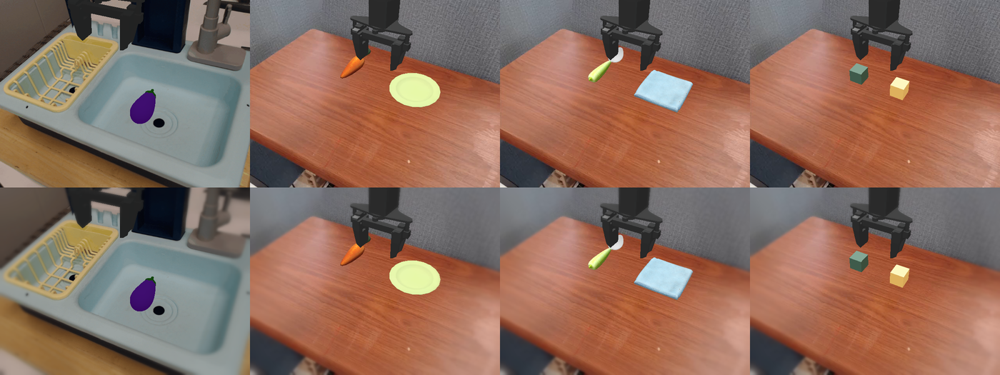
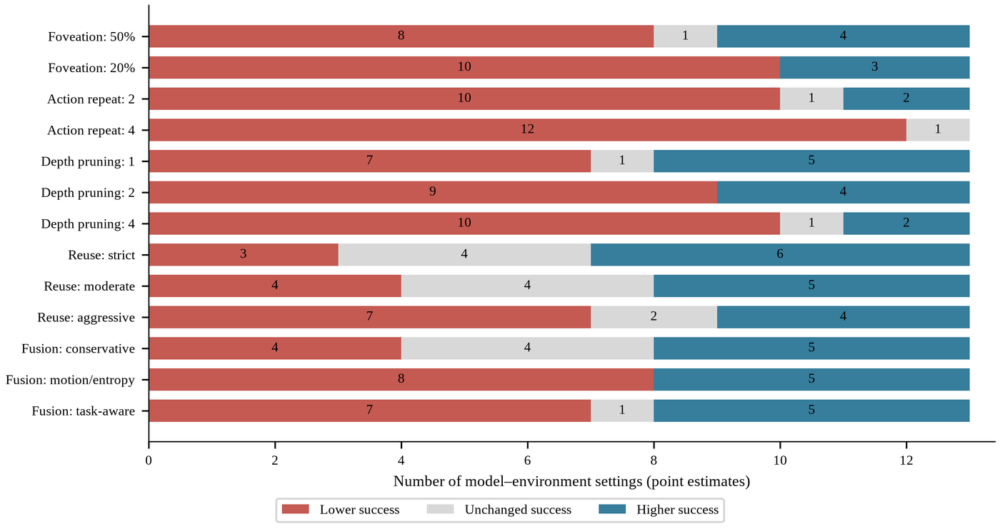
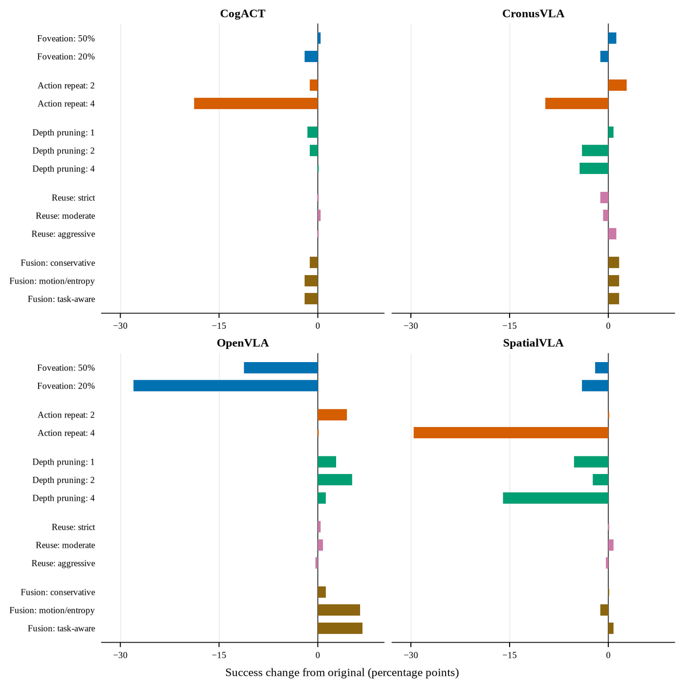
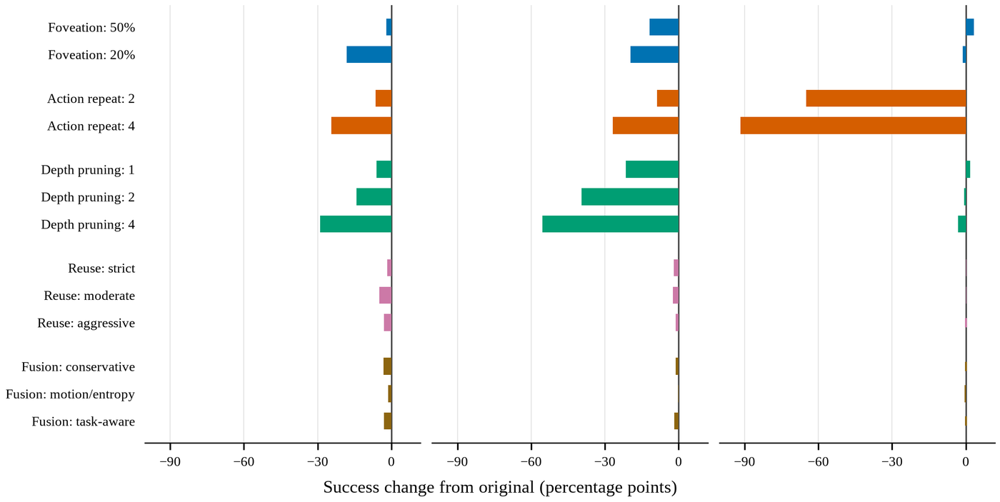

Anonymous project page for an ICRA 2027 submission
Bag of Tricks for Training-Free Vision-Language-Action ModelsWhat to See, When to Act, and How Much to Compute?
Supplementary material for the paper: the exact trick settings, results for every setting rather than the best one per trick, per-task breakdowns, the statistics behind the paired tests, qualitative rollouts and discussion points. Five tricks (visual foveation, action repeat, guarded action reuse, depth pruning, temporal feature fusion) on seven released VLA backbones and three simulated environments (SimplerEnv WidowX, SimplerEnv Google Robot "Fractal", LIBERO): 22 backbone and environment pairs, 14 configurations each, 47,600 paired episodes. Every number here is computed from the same per-episode records as the paper.
Videos
The 3-minute video submitted with the paper.
Extended video with one slide per trick
Same content plus one slide per trick with a paired rollout chosen to show the mechanism of the trick; the tables carry the evidence.
1. Additional implementation details
Section III of the paper defines the five tricks and Section IV-A the protocol. This section adds the exact settings and what every run recorded.
1.1 Trick settings
Foveation (Eq. 2). Keep ratio 0.2 or 0.5 of the image area, fovea at the image centre, sharp-disc radius r = sqrt(keep ratio x H x W / pi) (about 140 px on a 640 x 480 frame at keep 0.2). Outside the disc the pixel blends the input with two Gaussian blurs (sigma 3 and 9 px) along a ramp that rises from 0 at the disc edge to 1 at the farthest image corner. The image size and the visual-token count are unchanged; the blur is a CPU cost on every frame.

Top: raw WidowX observations. Bottom: the same frames at keep ratio 0.2.Action repeat. The policy is called once and each returned action is executed k times; the next call sees the latest observation. UniVLA emits a chunk of 5 actions on WidowX and 10 on LIBERO, so its open-loop horizon at k = 2 is 10 and 20 steps and at k = 4 is 20 and 40 steps (recorded steps per call: 9.9 / 19.9 on WidowX, 19.8 / 38.8 on LIBERO). All other backbones execute one action per call.
Depth pruning. Block Influence (Eq. 4) is measured with a forward hook on every decoder layer during the prefill of the first policy call of the run; that call runs unpruned and the ranking is then frozen for the run (one run per LIBERO suite). CronusVLA runs a separate calibration pass (seed 10000) on its 12-layer DiT action decoder. Layers in the first quarter of the stack and the final layer are never removed and no two removed layers are adjacent; every recorded Block Influence selection (54 pair-and-budget cells) satisfies these rules. A removed block becomes a pass-through, so its attention and MLP run on no token. The layers removed:
| Backbone and environment | Layers | 1 layer | 2 layers | 4 layers |
|---|---|---|---|---|
| CogACT WidowX | 32 | 17 | 17, 23 | 17, 20, 23, 25 |
| CogACT Fractal | 32 | 23 | 17, 23 | 17, 19, 23, 25 |
| OpenVLA WidowX and Fractal | 32 | 23 | 23, 25 | 17, 23, 25, 27 |
| OpenVLA LIBERO Long | 32 | 23 | 23, 25 | 19, 21, 23, 25 |
| OpenVLA LIBERO Goal | 32 | 17 | 17, 20 | 8, 17, 20, 23 |
| OpenVLA LIBERO Object | 32 | 17 | 17, 19 | 17, 19, 21, 23 |
| OpenVLA LIBERO Spatial | 32 | 8 | 8, 20 | 8, 20, 23, 25 |
| SpatialVLA WidowX and Fractal | 26 | 8 | 8, 10 | 8, 10, 13, 23 |
| CronusVLA WidowX (DiT) | 12 | 10 | 8, 10 | 4, 6, 8, 10 |
| CronusVLA Fractal (DiT) | 12 | 10 | 8, 10 | 3, 6, 8, 10 |
| UniVLA WidowX | 32 | 26 | 26, 30 | 21, 24, 26, 30 |
| UniVLA LIBERO Long | 32 | 19 | 19, 21 | 19, 21, 26, 30 |
| UniVLA LIBERO Goal and Object | 32 | 19 | 19, 21 | 19, 21, 26, 29 |
| UniVLA LIBERO Spatial | 32 | 19 | 19, 22 | 19, 22, 26, 29 |
| MiniVLA WidowX | 24 | 13 | 11, 13 | 7, 9, 11, 13 |
| SmolVLA LIBERO (all suites) | 32 | 30 | 28, 30 | 24, 26, 28, 30 |
SmolVLA's layers are fixed late indices without a Block Influence measurement.
Guarded reuse (Eq. 5). The previous action is repeated instead of a policy call only when every gate passes; otherwise the policy is queried in full. The three presets, identical on every backbone:
| Gate | Statistic | Strict | Moderate | Aggressive |
|---|---|---|---|---|
| Global image change | mean absolute difference between signatures of consecutive observations, at most | 0.01 | 0.015 | 0.02 |
| Local patch change | maximum over local patches of the same difference, at most | 0.03 | 0.04 | 0.05 |
| Action agreement | cosine similarity of the two most recent inferred 6-D pose actions, at least | 0.995 | 0.99 | 0.98 |
| Translation floor | translation norm of the candidate action, at least | 0.01 | 0.01 | 0.01 |
| Gripper | commanded gripper state unchanged | yes | yes | yes |
| Reuse cap | maximum consecutive reuses | 1 | 1 | 2 |
Temporal fusion (Eq. 8). Patches with motion above 0.01, the 15 percent highest-entropy patches, the 20 percent highest text-to-vision-attention patches (task-aware only) and their 1-patch neighbourhood are recomputed; the rest is reused from the previous call up to a cap. Motion-entropy and task-aware: cap 0.5, a full keyframe every 3rd call. Conservative-adaptive: cap 0.25, a keyframe every 2nd call and a forced keyframe when frame motion exceeds 0.03. Fusion acts on the projected visual tokens before the language decoder (CogACT, SpatialVLA, OpenVLA, MiniVLA) or on the discrete VQ codes (UniVLA; the representation is not recorded for CronusVLA and SmolVLA) and does not change the number of policy calls. Collecting attention for the task-aware setting forces an SDPA decoder into eager attention.
1.2 How often the gated tricks acted
A gated trick can only change a result where it fires, so the fire counts are part of the result. Reused steps: share of environment steps on which the previous action was reused instead of a policy call. Keyframe share: share of policy calls that recomputed every visual token. Median reused tokens: median per call of the visual tokens taken from the previous call.
| Backbone and environment | Reused steps, strict / moderate / aggressive (%) | Keyframe share, motion-entropy / task-aware / conservative | Median reused tokens |
|---|---|---|---|
| CogACT WidowX | 0.3 / 0.9 / 2.7 | 0.34 / same run / 0.93 | 108 / 108 / 64 |
| CogACT Fractal | 0.01 / 0.1 / 0.6 | 0.34 / same run / 0.91 | 85 to 128 / same / 64 |
| OpenVLA WidowX | 3.7 / 4.8 / 6.3 | 0.34 / 0.34 / 0.93 | 78 to 128 / 46 to 91 / 64 |
| OpenVLA Fractal | 2.3 / 2.5 / 3.9 | 0.34 / 0.34 / 0.82 | 102 to 117 / 47 to 62 / 64 |
| OpenVLA LIBERO (four suites) | 2.0 to 4.8 / 3.5 to 5.6 / 9.0 to 11.2 | 0.33 to 0.34 / 0.33 to 0.34 / 0.85 to 0.93 | 124 to 128 / 61 to 77 / 64 |
| SpatialVLA WidowX | 0.02 / 0.07 / 0.4 | 0.34 / 0.34 / 0.98 | 57 to 108 / 26 to 54 / 0 |
| SpatialVLA Fractal | 0.5 / 0.8 / 2.4 | 0.34 / 0.34 / 0.99 | 69 to 118 / 19 to 48 / 0 |
| CronusVLA WidowX | 0.05 / 0.3 / 1.4 | three settings identical, 106 fused patches per call | not recorded |
| CronusVLA Fractal | 0.7 / 1.7 / 4.2 | three settings identical, 112 fused patches per call | not recorded |
| UniVLA WidowX | 0.0 / 0.02 / 0.03 | 0.37 / not recorded / 1.00 | 314 to 443 / not recorded / 0 |
| UniVLA LIBERO (four suites) | 0.0 to 0.06 in every cell | 0.35 to 0.37 / 0.35 to 0.36 / 1.00 | 300 to 312 / 141 to 168 / 0 |
| MiniVLA WidowX | 3.1 / 4.2 / 4.0 | 0.34 / 0.34 / 0.90 | 107 / 68 / 64 |
| SmolVLA LIBERO (four suites) | 0.02 to 0.13 / 0.2 to 0.5 / 1.4 to 2.6 | not recorded | 19 to 23 / 3.5 to 5 / 16 |
The reuse gates open on at most about a tenth of the steps (OpenVLA LIBERO, aggressive) and on under 1 percent on CogACT Fractal, SpatialVLA WidowX and every UniVLA cell; on UniVLA Goal, Object and Spatial (all presets) and WidowX strict no gate ever fired; the Object, Spatial and WidowX strict runs are identical to the original, and Goal differs on one episode in two of its three presets. Conservative-adaptive fusion reused a median of zero patches on SpatialVLA and UniVLA, with 98.5 to 100 percent of calls keyframes, so those cells are close to the original policy under the fusion name; SmolVLA's task-aware setting reused a median of 3.5 to 5 tokens per call. CogACT exposes no text-to-vision attention where fusion runs, so its task-aware setting reproduces its motion-entropy run (identical outcomes, separate timing). CronusVLA's three fusion settings have identical outcomes and fused-patch counts, with no fusion parameters recorded.
1.3 Harness, checkpoints, software and hardware
Episodes and seeds. Step caps: 60 on WidowX (120 for eggplant in basket), 80 on Fractal, 520 / 300 / 280 / 220 on LIBERO Long / Goal / Object / Spatial. Every configuration replays the same task instances with seed 42 plus the episode index. All 21,568 failed episodes end exactly at the cap, so average steps follows success.
| Backbone | Checkpoint | Decoder pruned | Actions per call | Attention and versions |
|---|---|---|---|---|
| CogACT | CogACT-Base (Llama-2-7B base); DDIM 10 steps, cfg 1.5 | 32 Llama layers | 1 | SDPA, transformers 4.47.0 |
| OpenVLA | openvla-7b (SimplerEnv); openvla-7b-finetuned-libero-spatial / -object / -goal / -10 (one per suite); 224 px, no centre crop | 32 Llama-2 layers | 1 | SDPA on SimplerEnv, eager on LIBERO |
| SpatialVLA | spatialvla-4b-224-sft-bridge and -sft-fractal (PaliGemma2-3B); native chunk 4 with action ensembling, queried every step | 26 Gemma2 layers | 1 | eager (Gemma2 soft-capping), transformers 4.47.0 |
| CronusVLA | released checkpoint (training step 42,500) | 12-layer DiT action decoder | 1 | SDPA, transformers 4.47.0 |
| UniVLA | UNIVLA_SIMPLER_BRIDGE_VIDEO_BS128_20K (WidowX), UNIVLA_LIBERO_VIDEO_BS192_8K (LIBERO), Emu3 vision tokenizer | 32 Emu3 layers | chunk of 5 (WidowX) or 10 (LIBERO) | SDPA |
| MiniVLA | minivla-vq-bridge-prismatic (prism-qwen25-extra-dinosiglip-224px, 0.5B); 224 px, no centre crop | 24 Qwen2.5 layers | 1 | SDPA, transformers 4.47.0 |
| SmolVLA | LIBERO fine-tuned SmolVLA on SmolVLM2-500M-Instruct | 32 SmolLM2 layers (fixed indices) | 1 | explicit PyTorch SDPA; lerobot 0.4.4, transformers 4.51.3 |
GPU cards. The runs were scheduled on a shared GPU cluster. Every run file that records its card lists an RTX 5090, except that in the SmolVLA depth-pruning cells at two layers on Long and Goal and at four layers on Long, Goal and Object, 86 of the 500 episodes list an RTX PRO 6000, RTX 6000 Ada, L40S or RTX A6000. Latency is compared only within one backbone, environment, software stack and GPU class.
Two implementations of SmolVLA. SmolVLA's guarded reuse, temporal fusion and the depth cells named above were completed with a re-implemented evaluator that is 2 to 7 percent faster per call than the original implementation even where a trick does nothing. Their latency mixes that difference with the trick and is read through the paired success test alone.
Latency. Wall-clock per environment step: mean episode time divided by mean episode length. The clock runs from reset to termination or cap and includes simulator stepping and rendering, the policy calls, the foveation blur, the reuse gate and the fusion selector; it excludes model loading and environment construction. The values here are recomputed from the per-episode records and can differ from Tables I and II of the paper by up to 0.1 ms.
2. Additional results
Tables I and II of the paper show one setting per trick, and Figs. 1, 4 and 5 show WidowX in full but Fractal and LIBERO only pooled. Here every setting is listed with its paired p-value (2.1), split by task (2.2) and plotted for the other environments (2.3), with the statistics behind the p-values (2.4) and qualitative rollouts (2.5).
2.1 Every setting, every backbone and environment
All 13 settings and the original for every backbone and environment. Success % with, in parentheses, the change against the original on the same episodes and the exact two-sided McNemar p-value; green = significant gain, red = significant loss (p < 0.05); a star marks the setting shown in the paper's table. ms / step is wall-clock per environment step, comparable only within one backbone and environment. Average steps (which follows success, since failed episodes run to the cap) is in the CSV below.
Machine-readable: full_settings.csv (every setting) and per_task.csv (every setting and task).
WidowX: 6 backbones, 14 configurations
| Configuration | CogACT | CronusVLA | MiniVLA | |||
|---|---|---|---|---|---|---|
| Success % | ms / step | Success % | ms / step | Success % | ms / step | |
| Original | 50.0 | 141.5 | 34.0 | 125.8 | 36.0 | 149.5 |
| Foveation, keep 20% | 52.5*(+2.5, p 0.597) | 159.8 | 36.5*(+2.5, p 0.442) | 145.9 | 28.0(-8.0, p 0.056) | 160.2 |
| Foveation, keep 50% | 52.5(+2.5, p 0.511) | 162.6 | 34.0(0.0, p 1.000) | 146.9 | 35.0*(-1.0, p 0.896) | 156.4 |
| Action repeat, k = 2 | 12.0*(-38.0, p <0.001) | 92.0 | 3.5*(-30.5, p <0.001) | 84.7 | 30.0*(-6.0, p 0.088) | 99.1 |
| Action repeat, k = 4 | 4.5(-45.5, p <0.001) | 67.5 | 0.0(-34.0, p <0.001) | 63.8 | 29.0(-7.0, p 0.109) | 74.1 |
| Depth pruning, 1 layer | 57.0(+7.0, p 0.038) | 138.8 | 35.5(+1.5, p 0.678) | 122.2 | 18.5*(-17.5, p <0.001) | 145.9 |
| Depth pruning, 2 layers | 59.5*(+9.5, p 0.009) | 137.4 | 36.0*(+2.0, p 0.585) | 118.8 | 0.0(-36.0, p <0.001) | 137.9 |
| Depth pruning, 4 layers | 52.5(+2.5, p 0.630) | 135.4 | 28.5(-5.5, p 0.035) | 113.4 | 0.0(-36.0, p <0.001) | 131.2 |
| Guarded reuse, strict | 51.5(+1.5, p 0.678) | 141.2 | 36.0(+2.0, p 0.424) | 125.5 | 38.5*(+2.5, p 0.332) | 145.5 |
| Guarded reuse, moderate | 50.0(0.0, p 1.000) | 140.4 | 34.5(+0.5, p 1.000) | 122.8 | 36.0(0.0, p 1.000) | 146.3 |
| Guarded reuse, aggressive | 53.0*(+3.0, p 0.362) | 138.7 | 36.5*(+2.5, p 0.332) | 122.1 | 33.5(-2.5, p 0.332) | 144.8 |
| Temporal fusion, motion-entropy | 58.0*(+8.0, p 0.020) | 141.9 | 33.5*(-0.5, p 1.000) | 126.9 | 39.0*(+3.0, p 0.392) | 149.9 |
| Temporal fusion, task-aware | 58.0(+8.0, p 0.020) | 142.1 | 33.5(-0.5, p 1.000) | 127.3 | 35.5(-0.5, p 1.000) | 162.0 |
| Temporal fusion, conservative-adaptive | 52.0(+2.0, p 0.644) | 141.4 | 33.5(-0.5, p 1.000) | 127.7 | 38.5(+2.5, p 0.424) | 148.6 |
| Configuration | OpenVLA | SpatialVLA | UniVLA | |||
|---|---|---|---|---|---|---|
| Success % | ms / step | Success % | ms / step | Success % | ms / step | |
| Original | 43.5 | 210.2 | 45.0 | 423.6 | 87.5 | 190.9 |
| Foveation, keep 20% | 22.5(-21.0, p <0.001) | 216.1 | 50.0*(+5.0, p 0.110) | 445.9 | 79.0*(-8.5, p 0.009) | 191.8 |
| Foveation, keep 50% | 30.0*(-13.5, p 0.006) | 217.6 | 44.5(-0.5, p 1.000) | 445.8 | 73.0(-14.5, p <0.001) | 189.6 |
| Action repeat, k = 2 | 28.0*(-15.5, p <0.001) | 130.2 | 41.0*(-4.0, p 0.280) | 235.1 | 12.5*(-75.0, p <0.001) | 113.5 |
| Action repeat, k = 4 | 14.5(-29.0, p <0.001) | 90.4 | 29.0(-16.0, p <0.001) | 137.9 | 3.0(-84.5, p <0.001) | 78.6 |
| Depth pruning, 1 layer | 43.5(0.0, p 1.000) | 204.5 | 38.5*(-6.5, p 0.024) | 408.5 | 82.0(-5.5, p 0.052) | 185.2 |
| Depth pruning, 2 layers | 47.5*(+4.0, p 0.366) | 199.4 | 28.0(-17.0, p <0.001) | 397.3 | 82.0*(-5.5, p 0.052) | 182.6 |
| Depth pruning, 4 layers | 37.5(-6.0, p 0.119) | 190.1 | 14.0(-31.0, p <0.001) | 374.6 | 81.5(-6.0, p 0.043) | 173.1 |
| Guarded reuse, strict | 45.5*(+2.0, p 0.503) | 202.7 | 45.0(0.0, p 1.000) | 422.6 | 87.5(0.0, p 1.000) | 191.1 |
| Guarded reuse, moderate | 41.5(-2.0, p 0.541) | 201.4 | 45.0(0.0, p 1.000) | 425.1 | 87.5*(0.0, p 1.000) | 189.6 |
| Guarded reuse, aggressive | 41.0(-2.5, p 0.533) | 199.6 | 45.5*(+0.5, p 1.000) | 422.6 | 86.5(-1.0, p 0.500) | 190.6 |
| Temporal fusion, motion-entropy | 41.0(-2.5, p 0.615) | 208.9 | 46.0*(+1.0, p 0.851) | 428.1 | 82.0(-5.5, p 0.035) | 188.7 |
| Temporal fusion, task-aware | 50.5*(+7.0, p 0.114) | 222.3 | 44.0(-1.0, p 0.815) | 426.8 | 83.5(-4.0, p 0.169) | 221.7 |
| Temporal fusion, conservative-adaptive | 48.0(+4.5, p 0.122) | 208.2 | 45.0(0.0, p 1.000) | 426.3 | 87.5*(0.0, p 1.000) | 191.6 |
Fractal: 4 backbones, 14 configurations
| Configuration | CogACT | CronusVLA | ||
|---|---|---|---|---|
| Success % | ms / step | Success % | ms / step | |
| Original | 66.8 | 169.0 | 55.6 | 155.1 |
| Foveation, keep 20% | 64.8(-2.0, p 0.442) | 189.8 | 54.4(-1.2, p 0.664) | 178.3 |
| Foveation, keep 50% | 67.2*(+0.4, p 1.000) | 194.5 | 56.8*(+1.2, p 0.664) | 180.0 |
| Action repeat, k = 2 | 65.6*(-1.2, p 0.736) | 121.6 | 58.4*(+2.8, p 0.210) | 112.4 |
| Action repeat, k = 4 | 48.0(-18.8, p <0.001) | 97.5 | 46.0(-9.6, p <0.001) | 89.9 |
| Depth pruning, 1 layer | 65.2(-1.6, p 0.454) | 170.1 | 56.4*(+0.8, p 0.804) | 152.8 |
| Depth pruning, 2 layers | 65.6(-1.2, p 0.629) | 168.4 | 51.6(-4.0, p 0.031) | 149.6 |
| Depth pruning, 4 layers | 66.8*(0.0, p 1.000) | 164.0 | 51.2(-4.4, p 0.019) | 144.1 |
| Guarded reuse, strict | 66.8(0.0, p 1.000) | 168.7 | 54.4(-1.2, p 0.607) | 153.1 |
| Guarded reuse, moderate | 67.2*(+0.4, p 1.000) | 169.9 | 54.8(-0.8, p 0.754) | 153.0 |
| Guarded reuse, aggressive | 66.8(0.0, p 1.000) | 176.3 | 56.8*(+1.2, p 0.607) | 150.3 |
| Temporal fusion, motion-entropy | 64.8(-2.0, p 0.267) | 176.4 | 57.2*(+1.6, p 0.424) | 156.9 |
| Temporal fusion, task-aware | 64.8(-2.0, p 0.267) | 171.1 | 57.2(+1.6, p 0.424) | 156.3 |
| Temporal fusion, conservative-adaptive | 65.6*(-1.2, p 0.375) | 171.3 | 57.2(+1.6, p 0.424) | 156.7 |
| Configuration | OpenVLA | SpatialVLA | ||
|---|---|---|---|---|
| Success % | ms / step | Success % | ms / step | |
| Original | 35.6 | 239.7 | 59.2 | 449.9 |
| Foveation, keep 20% | 7.6(-28.0, p <0.001) | 248.9 | 55.2(-4.0, p 0.174) | 475.0 |
| Foveation, keep 50% | 24.4*(-11.2, p 0.001) | 249.4 | 57.2*(-2.0, p 0.511) | 478.4 |
| Action repeat, k = 2 | 40.0*(+4.4, p 0.215) | 159.0 | 59.2*(0.0, p 1.000) | 262.9 |
| Action repeat, k = 4 | 35.6(0.0, p 1.000) | 119.0 | 29.6(-29.6, p <0.001) | 166.0 |
| Depth pruning, 1 layer | 38.4(+2.8, p 0.435) | 236.5 | 54.0(-5.2, p 0.047) | 435.0 |
| Depth pruning, 2 layers | 40.8*(+5.2, p 0.124) | 230.7 | 56.8*(-2.4, p 0.430) | 426.4 |
| Depth pruning, 4 layers | 36.8(+1.2, p 0.815) | 223.2 | 43.2(-16.0, p <0.001) | 399.1 |
| Guarded reuse, strict | 36.0(+0.4, p 1.000) | 235.7 | 59.2(0.0, p 1.000) | 446.6 |
| Guarded reuse, moderate | 36.4*(+0.8, p 0.500) | 236.6 | 60.0*(+0.8, p 0.500) | 446.9 |
| Guarded reuse, aggressive | 35.2(-0.4, p 1.000) | 234.7 | 58.8(-0.4, p 1.000) | 441.0 |
| Temporal fusion, motion-entropy | 42.0(+6.4, p 0.056) | 242.6 | 58.0(-1.2, p 0.743) | 451.5 |
| Temporal fusion, task-aware | 42.4*(+6.8, p 0.012) | 254.0 | 60.0*(+0.8, p 0.832) | 453.4 |
| Temporal fusion, conservative-adaptive | 36.8(+1.2, p 0.549) | 240.3 | 59.2(0.0, p 1.000) | 452.5 |
LIBERO Spatial: 3 backbones, 14 configurations
| Configuration | OpenVLA | UniVLA | SmolVLA | |||
|---|---|---|---|---|---|---|
| Success % | ms / step | Success % | ms / step | Success % | ms / step | |
| Original | 78.0 | 181.0 | 95.0 | 72.2 | 76.0 | 292.3 |
| Foveation, keep 20% | 55.0(-23.0, p <0.001) | 186.6 | 91.0(-4.0, p 0.219) | 74.5 | 63.0(-13.0, p 0.053) | 307.9 |
| Foveation, keep 50% | 83.0*(+5.0, p 0.405) | 187.1 | 96.0*(+1.0, p 1.000) | 73.9 | 76.0*(0.0, p 1.000) | 313.8 |
| Action repeat, k = 2 | 72.0*(-6.0, p 0.286) | 101.2 | 27.0*(-68.0, p <0.001) | 46.4 | 64.0*(-12.0, p 0.073) | 157.7 |
| Action repeat, k = 4 | 47.0(-31.0, p <0.001) | 61.3 | 0.0(-95.0, p <0.001) | 33.1 | 35.0(-41.0, p <0.001) | 87.4 |
| Depth pruning, 1 layer | 62.0*(-16.0, p 0.011) | 175.1 | 96.0*(+1.0, p 1.000) | 71.6 | 62.0*(-14.0, p 0.034) | 296.1 |
| Depth pruning, 2 layers | 56.0(-22.0, p <0.001) | 172.0 | 94.0(-1.0, p 1.000) | 70.2 | 38.0(-38.0, p <0.001) | 298.8 |
| Depth pruning, 4 layers | 48.0(-30.0, p <0.001) | 160.8 | 94.0(-1.0, p 1.000) | 67.3 | 29.0(-47.0, p <0.001) | 294.9 |
| Guarded reuse, strict | 82.0*(+4.0, p 0.219) | 177.5 | 95.0*(0.0, p 1.000) | 73.3 | 78.0*(+2.0, p 0.832) | 282.1 |
| Guarded reuse, moderate | 76.0(-2.0, p 0.791) | 175.0 | 95.0(0.0, p 1.000) | 73.0 | 78.0(+2.0, p 0.839) | 279.6 |
| Guarded reuse, aggressive | 77.0(-1.0, p 1.000) | 166.9 | 95.0(0.0, p 1.000) | 72.6 | 76.0(0.0, p 1.000) | 277.3 |
| Temporal fusion, motion-entropy | 85.0*(+7.0, p 0.143) | 180.8 | 91.0(-4.0, p 0.219) | 73.1 | 81.0(+5.0, p 0.359) | 283.0 |
| Temporal fusion, task-aware | 77.0(-1.0, p 1.000) | 193.3 | 92.0(-3.0, p 0.375) | 80.9 | 82.0*(+6.0, p 0.286) | 285.2 |
| Temporal fusion, conservative-adaptive | 79.0(+1.0, p 1.000) | 181.2 | 95.0*(0.0, p 1.000) | 72.2 | 78.0(+2.0, p 0.839) | 284.9 |
LIBERO Object: 3 backbones, 14 configurations
| Configuration | OpenVLA | UniVLA | SmolVLA | |||
|---|---|---|---|---|---|---|
| Success % | ms / step | Success % | ms / step | Success % | ms / step | |
| Original | 87.0 | 173.8 | 96.0 | 62.4 | 94.0 | 290.8 |
| Foveation, keep 20% | 74.0(-13.0, p 0.024) | 179.9 | 100.0*(+4.0, p 0.125) | 63.0 | 74.0(-20.0, p <0.001) | 307.1 |
| Foveation, keep 50% | 86.0*(-1.0, p 1.000) | 180.1 | 97.0(+1.0, p 1.000) | 62.8 | 81.0*(-13.0, p 0.002) | 309.1 |
| Action repeat, k = 2 | 84.0*(-3.0, p 0.678) | 93.7 | 21.0*(-75.0, p <0.001) | 37.6 | 90.0*(-4.0, p 0.424) | 150.2 |
| Action repeat, k = 4 | 59.0(-28.0, p <0.001) | 54.3 | 1.0(-95.0, p <0.001) | 24.9 | 71.0(-23.0, p <0.001) | 82.0 |
| Depth pruning, 1 layer | 85.0*(-2.0, p 0.832) | 168.3 | 99.0*(+3.0, p 0.375) | 61.6 | 73.0*(-21.0, p <0.001) | 294.8 |
| Depth pruning, 2 layers | 79.0(-8.0, p 0.152) | 164.2 | 94.0(-2.0, p 0.754) | 60.3 | 40.0(-54.0, p <0.001) | 290.2 |
| Depth pruning, 4 layers | 65.0(-22.0, p <0.001) | 156.1 | 92.0(-4.0, p 0.388) | 57.9 | 13.0(-81.0, p <0.001) | 242.3 |
| Guarded reuse, strict | 85.0*(-2.0, p 0.754) | 169.3 | 96.0*(0.0, p 1.000) | 62.7 | 89.0(-5.0, p 0.267) | 275.4 |
| Guarded reuse, moderate | 80.0(-7.0, p 0.118) | 164.0 | 96.0(0.0, p 1.000) | 62.8 | 89.0(-5.0, p 0.267) | 274.8 |
| Guarded reuse, aggressive | 85.0(-2.0, p 0.791) | 158.6 | 96.0(0.0, p 1.000) | 62.3 | 90.0*(-4.0, p 0.424) | 272.7 |
| Temporal fusion, motion-entropy | 83.0(-4.0, p 0.481) | 172.3 | 98.0*(+2.0, p 0.625) | 61.4 | 90.0(-4.0, p 0.424) | 275.0 |
| Temporal fusion, task-aware | 86.0*(-1.0, p 1.000) | 185.6 | 97.0(+1.0, p 1.000) | 67.6 | 90.0*(-4.0, p 0.424) | 279.0 |
| Temporal fusion, conservative-adaptive | 82.0(-5.0, p 0.180) | 174.3 | 96.0(0.0, p 1.000) | 61.4 | 86.0(-8.0, p 0.096) | 276.1 |
LIBERO Goal: 3 backbones, 14 configurations
| Configuration | OpenVLA | UniVLA | SmolVLA | |||
|---|---|---|---|---|---|---|
| Success % | ms / step | Success % | ms / step | Success % | ms / step | |
| Original | 75.0 | 176.1 | 92.0 | 65.1 | 80.0 | 295.7 |
| Foveation, keep 20% | 64.0(-11.0, p 0.099) | 179.7 | 87.0(-5.0, p 0.227) | 65.1 | 58.0(-22.0, p <0.001) | 308.0 |
| Foveation, keep 50% | 75.0*(0.0, p 1.000) | 181.3 | 99.0*(+7.0, p 0.039) | 65.5 | 67.0*(-13.0, p 0.015) | 304.1 |
| Action repeat, k = 2 | 68.0*(-7.0, p 0.248) | 96.3 | 34.0*(-58.0, p <0.001) | 39.7 | 72.0*(-8.0, p 0.134) | 154.2 |
| Action repeat, k = 4 | 60.0(-15.0, p 0.006) | 55.6 | 0.0(-92.0, p <0.001) | 27.0 | 59.0(-21.0, p <0.001) | 83.6 |
| Depth pruning, 1 layer | 72.0*(-3.0, p 0.701) | 170.5 | 93.0*(+1.0, p 1.000) | 63.2 | 62.0*(-18.0, p 0.001) | 293.5 |
| Depth pruning, 2 layers | 59.0(-16.0, p 0.004) | 167.0 | 89.0(-3.0, p 0.629) | 62.5 | 53.0(-27.0, p <0.001) | 286.6 |
| Depth pruning, 4 layers | 41.0(-34.0, p <0.001) | 158.5 | 84.0(-8.0, p 0.115) | 59.7 | 28.0(-52.0, p <0.001) | 262.8 |
| Guarded reuse, strict | 71.0(-4.0, p 0.289) | 168.0 | 93.0*(+1.0, p 1.000) | 64.7 | 77.0(-3.0, p 0.701) | 277.0 |
| Guarded reuse, moderate | 69.0(-6.0, p 0.180) | 167.5 | 93.0(+1.0, p 1.000) | 64.1 | 76.0(-4.0, p 0.557) | 275.6 |
| Guarded reuse, aggressive | 72.0*(-3.0, p 0.648) | 157.8 | 92.0(0.0, p 1.000) | 64.2 | 79.0*(-1.0, p 1.000) | 270.4 |
| Temporal fusion, motion-entropy | 74.0(-1.0, p 1.000) | 177.1 | 95.0*(+3.0, p 0.549) | 64.9 | 77.0(-3.0, p 0.701) | 276.7 |
| Temporal fusion, task-aware | 73.0(-2.0, p 0.832) | 188.3 | 93.0(+1.0, p 1.000) | 71.9 | 74.0(-6.0, p 0.345) | 280.4 |
| Temporal fusion, conservative-adaptive | 77.0*(+2.0, p 0.727) | 176.2 | 92.0(0.0, p 1.000) | 64.4 | 78.0*(-2.0, p 0.856) | 279.3 |
LIBERO Long: 3 backbones, 14 configurations
| Configuration | OpenVLA | UniVLA | SmolVLA | |||
|---|---|---|---|---|---|---|
| Success % | ms / step | Success % | ms / step | Success % | ms / step | |
| Original | 56.0 | 171.6 | 86.0 | 59.9 | 42.0 | 289.5 |
| Foveation, keep 20% | 30.0(-26.0, p <0.001) | 178.2 | 86.0(0.0, p 1.000) | 60.1 | 19.0(-23.0, p <0.001) | 305.6 |
| Foveation, keep 50% | 44.0*(-12.0, p 0.036) | 178.6 | 90.0*(+4.0, p 0.388) | 60.6 | 21.0*(-21.0, p <0.001) | 306.5 |
| Action repeat, k = 2 | 46.0*(-10.0, p 0.099) | 93.2 | 27.0*(-59.0, p <0.001) | 35.9 | 31.0*(-11.0, p 0.061) | 152.1 |
| Action repeat, k = 4 | 32.0(-24.0, p <0.001) | 53.7 | 1.0(-85.0, p <0.001) | 24.1 | 20.0(-22.0, p <0.001) | 80.6 |
| Depth pruning, 1 layer | 53.0*(-3.0, p 0.736) | 168.4 | 88.0(+2.0, p 0.791) | 58.0 | 9.0*(-33.0, p <0.001) | 291.6 |
| Depth pruning, 2 layers | 45.0(-11.0, p 0.071) | 164.5 | 89.0*(+3.0, p 0.629) | 57.2 | 3.0(-39.0, p <0.001) | 287.4 |
| Depth pruning, 4 layers | 26.0(-30.0, p <0.001) | 154.2 | 86.0(0.0, p 1.000) | 54.4 | 0.0(-42.0, p <0.001) | 258.9 |
| Guarded reuse, strict | 51.0(-5.0, p 0.383) | 166.8 | 86.0*(0.0, p 1.000) | 59.5 | 40.0(-2.0, p 0.851) | 273.4 |
| Guarded reuse, moderate | 51.0*(-5.0, p 0.405) | 163.8 | 86.0(0.0, p 1.000) | 59.9 | 40.0(-2.0, p 0.851) | 274.6 |
| Guarded reuse, aggressive | 50.0(-6.0, p 0.362) | 156.3 | 86.0(0.0, p 1.000) | 58.2 | 42.0*(0.0, p 1.000) | 268.9 |
| Temporal fusion, motion-entropy | 49.0*(-7.0, p 0.230) | 172.9 | 83.0(-3.0, p 0.581) | 58.5 | 43.0(+1.0, p 1.000) | 276.0 |
| Temporal fusion, task-aware | 48.0(-8.0, p 0.185) | 185.7 | 87.0*(+1.0, p 1.000) | 64.9 | 39.0(-3.0, p 0.690) | 275.9 |
| Temporal fusion, conservative-adaptive | 45.0(-11.0, p 0.007) | 176.2 | 86.0(0.0, p 1.000) | 58.5 | 45.0*(+3.0, p 0.690) | 276.7 |
2.2 Per-task success
Every configuration split by task (50 episodes per task on SimplerEnv, 10 on LIBERO), with the change against the original in parentheses. Expand an environment to see its tasks. On Fractal, place apple in closed top drawer is 0 of 50 for every configuration of every backbone, so every Fractal success value carries 50 guaranteed failures.
WidowX: 6 backbones
CogACT on WidowX
| Configuration | Carrot on plate | Eggplant in basket | Spoon on towel | Stack cube |
|---|---|---|---|---|
| Original | 38.0 | 68.0 | 62.0 | 32.0 |
| Foveation, keep 20% | 42.0(+4.0) | 88.0(+20.0) | 50.0(-12.0) | 30.0(-2.0) |
| Foveation, keep 50% | 42.0(+4.0) | 76.0(+8.0) | 64.0(+2.0) | 28.0(-4.0) |
| Action repeat, k = 2 | 14.0(-24.0) | 16.0(-52.0) | 18.0(-44.0) | 0.0(-32.0) |
| Action repeat, k = 4 | 8.0(-30.0) | 2.0(-66.0) | 6.0(-56.0) | 2.0(-30.0) |
| Depth pruning, 1 layer | 44.0(+6.0) | 78.0(+10.0) | 74.0(+12.0) | 32.0(0.0) |
| Depth pruning, 2 layers | 54.0(+16.0) | 78.0(+10.0) | 64.0(+2.0) | 42.0(+10.0) |
| Depth pruning, 4 layers | 52.0(+14.0) | 76.0(+8.0) | 42.0(-20.0) | 40.0(+8.0) |
| Guarded reuse, strict | 44.0(+6.0) | 70.0(+2.0) | 62.0(0.0) | 30.0(-2.0) |
| Guarded reuse, moderate | 40.0(+2.0) | 64.0(-4.0) | 70.0(+8.0) | 26.0(-6.0) |
| Guarded reuse, aggressive | 42.0(+4.0) | 70.0(+2.0) | 66.0(+4.0) | 34.0(+2.0) |
| Temporal fusion, motion-entropy | 46.0(+8.0) | 82.0(+14.0) | 72.0(+10.0) | 32.0(0.0) |
| Temporal fusion, task-aware | 46.0(+8.0) | 82.0(+14.0) | 72.0(+10.0) | 32.0(0.0) |
| Temporal fusion, conservative-adaptive | 36.0(-2.0) | 76.0(+8.0) | 68.0(+6.0) | 28.0(-4.0) |
CronusVLA on WidowX
| Configuration | Carrot on plate | Eggplant in basket | Spoon on towel | Stack cube |
|---|---|---|---|---|
| Original | 16.0 | 96.0 | 24.0 | 0.0 |
| Foveation, keep 20% | 10.0(-6.0) | 100.0(+4.0) | 36.0(+12.0) | 0.0(0.0) |
| Foveation, keep 50% | 8.0(-8.0) | 98.0(+2.0) | 30.0(+6.0) | 0.0(0.0) |
| Action repeat, k = 2 | 4.0(-12.0) | 8.0(-88.0) | 2.0(-22.0) | 0.0(0.0) |
| Action repeat, k = 4 | 0.0(-16.0) | 0.0(-96.0) | 0.0(-24.0) | 0.0(0.0) |
| Depth pruning, 1 layer | 12.0(-4.0) | 98.0(+2.0) | 30.0(+6.0) | 2.0(+2.0) |
| Depth pruning, 2 layers | 16.0(0.0) | 96.0(0.0) | 32.0(+8.0) | 0.0(0.0) |
| Depth pruning, 4 layers | 14.0(-2.0) | 94.0(-2.0) | 6.0(-18.0) | 0.0(0.0) |
| Guarded reuse, strict | 14.0(-2.0) | 98.0(+2.0) | 32.0(+8.0) | 0.0(0.0) |
| Guarded reuse, moderate | 10.0(-6.0) | 98.0(+2.0) | 30.0(+6.0) | 0.0(0.0) |
| Guarded reuse, aggressive | 10.0(-6.0) | 98.0(+2.0) | 38.0(+14.0) | 0.0(0.0) |
| Temporal fusion, motion-entropy | 10.0(-6.0) | 96.0(0.0) | 28.0(+4.0) | 0.0(0.0) |
| Temporal fusion, task-aware | 10.0(-6.0) | 96.0(0.0) | 28.0(+4.0) | 0.0(0.0) |
| Temporal fusion, conservative-adaptive | 10.0(-6.0) | 96.0(0.0) | 28.0(+4.0) | 0.0(0.0) |
MiniVLA on WidowX
| Configuration | Carrot on plate | Eggplant in basket | Spoon on towel | Stack cube |
|---|---|---|---|---|
| Original | 4.0 | 18.0 | 50.0 | 72.0 |
| Foveation, keep 20% | 12.0(+8.0) | 26.0(+8.0) | 44.0(-6.0) | 30.0(-42.0) |
| Foveation, keep 50% | 14.0(+10.0) | 22.0(+4.0) | 52.0(+2.0) | 52.0(-20.0) |
| Action repeat, k = 2 | 10.0(+6.0) | 14.0(-4.0) | 48.0(-2.0) | 48.0(-24.0) |
| Action repeat, k = 4 | 8.0(+4.0) | 16.0(-2.0) | 48.0(-2.0) | 44.0(-28.0) |
| Depth pruning, 1 layer | 0.0(-4.0) | 20.0(+2.0) | 38.0(-12.0) | 16.0(-56.0) |
| Depth pruning, 2 layers | 0.0(-4.0) | 0.0(-18.0) | 0.0(-50.0) | 0.0(-72.0) |
| Depth pruning, 4 layers | 0.0(-4.0) | 0.0(-18.0) | 0.0(-50.0) | 0.0(-72.0) |
| Guarded reuse, strict | 8.0(+4.0) | 24.0(+6.0) | 50.0(0.0) | 72.0(0.0) |
| Guarded reuse, moderate | 8.0(+4.0) | 16.0(-2.0) | 48.0(-2.0) | 72.0(0.0) |
| Guarded reuse, aggressive | 8.0(+4.0) | 10.0(-8.0) | 44.0(-6.0) | 72.0(0.0) |
| Temporal fusion, motion-entropy | 2.0(-2.0) | 22.0(+4.0) | 48.0(-2.0) | 84.0(+12.0) |
| Temporal fusion, task-aware | 8.0(+4.0) | 16.0(-2.0) | 48.0(-2.0) | 70.0(-2.0) |
| Temporal fusion, conservative-adaptive | 4.0(0.0) | 18.0(0.0) | 54.0(+4.0) | 78.0(+6.0) |
OpenVLA on WidowX
| Configuration | Carrot on plate | Eggplant in basket | Spoon on towel | Stack cube |
|---|---|---|---|---|
| Original | 32.0 | 74.0 | 38.0 | 30.0 |
| Foveation, keep 20% | 24.0(-8.0) | 16.0(-58.0) | 38.0(0.0) | 12.0(-18.0) |
| Foveation, keep 50% | 34.0(+2.0) | 24.0(-50.0) | 48.0(+10.0) | 14.0(-16.0) |
| Action repeat, k = 2 | 20.0(-12.0) | 46.0(-28.0) | 28.0(-10.0) | 18.0(-12.0) |
| Action repeat, k = 4 | 22.0(-10.0) | 28.0(-46.0) | 6.0(-32.0) | 2.0(-28.0) |
| Depth pruning, 1 layer | 16.0(-16.0) | 72.0(-2.0) | 44.0(+6.0) | 42.0(+12.0) |
| Depth pruning, 2 layers | 38.0(+6.0) | 66.0(-8.0) | 46.0(+8.0) | 40.0(+10.0) |
| Depth pruning, 4 layers | 28.0(-4.0) | 76.0(+2.0) | 26.0(-12.0) | 20.0(-10.0) |
| Guarded reuse, strict | 28.0(-4.0) | 78.0(+4.0) | 46.0(+8.0) | 30.0(0.0) |
| Guarded reuse, moderate | 28.0(-4.0) | 70.0(-4.0) | 40.0(+2.0) | 28.0(-2.0) |
| Guarded reuse, aggressive | 28.0(-4.0) | 70.0(-4.0) | 38.0(0.0) | 28.0(-2.0) |
| Temporal fusion, motion-entropy | 26.0(-6.0) | 60.0(-14.0) | 54.0(+16.0) | 24.0(-6.0) |
| Temporal fusion, task-aware | 46.0(+14.0) | 74.0(0.0) | 52.0(+14.0) | 30.0(0.0) |
| Temporal fusion, conservative-adaptive | 28.0(-4.0) | 82.0(+8.0) | 52.0(+14.0) | 30.0(0.0) |
SpatialVLA on WidowX
| Configuration | Carrot on plate | Eggplant in basket | Spoon on towel | Stack cube |
|---|---|---|---|---|
| Original | 26.0 | 100.0 | 22.0 | 32.0 |
| Foveation, keep 20% | 34.0(+8.0) | 100.0(0.0) | 24.0(+2.0) | 42.0(+10.0) |
| Foveation, keep 50% | 28.0(+2.0) | 100.0(0.0) | 20.0(-2.0) | 30.0(-2.0) |
| Action repeat, k = 2 | 4.0(-22.0) | 98.0(-2.0) | 40.0(+18.0) | 22.0(-10.0) |
| Action repeat, k = 4 | 12.0(-14.0) | 74.0(-26.0) | 18.0(-4.0) | 12.0(-20.0) |
| Depth pruning, 1 layer | 20.0(-6.0) | 92.0(-8.0) | 18.0(-4.0) | 24.0(-8.0) |
| Depth pruning, 2 layers | 16.0(-10.0) | 82.0(-18.0) | 0.0(-22.0) | 14.0(-18.0) |
| Depth pruning, 4 layers | 26.0(0.0) | 16.0(-84.0) | 6.0(-16.0) | 8.0(-24.0) |
| Guarded reuse, strict | 26.0(0.0) | 100.0(0.0) | 22.0(0.0) | 32.0(0.0) |
| Guarded reuse, moderate | 26.0(0.0) | 100.0(0.0) | 22.0(0.0) | 32.0(0.0) |
| Guarded reuse, aggressive | 26.0(0.0) | 100.0(0.0) | 20.0(-2.0) | 36.0(+4.0) |
| Temporal fusion, motion-entropy | 30.0(+4.0) | 100.0(0.0) | 20.0(-2.0) | 34.0(+2.0) |
| Temporal fusion, task-aware | 22.0(-4.0) | 100.0(0.0) | 20.0(-2.0) | 34.0(+2.0) |
| Temporal fusion, conservative-adaptive | 26.0(0.0) | 98.0(-2.0) | 24.0(+2.0) | 32.0(0.0) |
UniVLA on WidowX
| Configuration | Carrot on plate | Eggplant in basket | Spoon on towel | Stack cube |
|---|---|---|---|---|
| Original | 84.0 | 98.0 | 88.0 | 80.0 |
| Foveation, keep 20% | 68.0(-16.0) | 96.0(-2.0) | 80.0(-8.0) | 72.0(-8.0) |
| Foveation, keep 50% | 62.0(-22.0) | 96.0(-2.0) | 80.0(-8.0) | 54.0(-26.0) |
| Action repeat, k = 2 | 24.0(-60.0) | 6.0(-92.0) | 12.0(-76.0) | 8.0(-72.0) |
| Action repeat, k = 4 | 4.0(-80.0) | 2.0(-96.0) | 6.0(-82.0) | 0.0(-80.0) |
| Depth pruning, 1 layer | 76.0(-8.0) | 98.0(0.0) | 80.0(-8.0) | 74.0(-6.0) |
| Depth pruning, 2 layers | 72.0(-12.0) | 98.0(0.0) | 76.0(-12.0) | 82.0(+2.0) |
| Depth pruning, 4 layers | 84.0(0.0) | 98.0(0.0) | 74.0(-14.0) | 70.0(-10.0) |
| Guarded reuse, strict | 84.0(0.0) | 98.0(0.0) | 88.0(0.0) | 80.0(0.0) |
| Guarded reuse, moderate | 84.0(0.0) | 98.0(0.0) | 88.0(0.0) | 80.0(0.0) |
| Guarded reuse, aggressive | 84.0(0.0) | 98.0(0.0) | 84.0(-4.0) | 80.0(0.0) |
| Temporal fusion, motion-entropy | 76.0(-8.0) | 98.0(0.0) | 76.0(-12.0) | 78.0(-2.0) |
| Temporal fusion, task-aware | 72.0(-12.0) | 100.0(+2.0) | 88.0(0.0) | 74.0(-6.0) |
| Temporal fusion, conservative-adaptive | 84.0(0.0) | 98.0(0.0) | 88.0(0.0) | 80.0(0.0) |
Fractal: 4 backbones
CogACT on Fractal
| Configuration | Close drawer | Move near | Open drawer | Pick coke can | Apple into closed drawer |
|---|---|---|---|---|---|
| Original | 62.0 | 94.0 | 80.0 | 98.0 | 0.0 |
| Foveation, keep 20% | 58.0(-4.0) | 94.0(0.0) | 72.0(-8.0) | 100.0(+2.0) | 0.0(0.0) |
| Foveation, keep 50% | 68.0(+6.0) | 92.0(-2.0) | 80.0(0.0) | 96.0(-2.0) | 0.0(0.0) |
| Action repeat, k = 2 | 74.0(+12.0) | 82.0(-12.0) | 84.0(+4.0) | 88.0(-10.0) | 0.0(0.0) |
| Action repeat, k = 4 | 88.0(+26.0) | 50.0(-44.0) | 42.0(-38.0) | 60.0(-38.0) | 0.0(0.0) |
| Depth pruning, 1 layer | 58.0(-4.0) | 96.0(+2.0) | 72.0(-8.0) | 100.0(+2.0) | 0.0(0.0) |
| Depth pruning, 2 layers | 60.0(-2.0) | 94.0(0.0) | 78.0(-2.0) | 96.0(-2.0) | 0.0(0.0) |
| Depth pruning, 4 layers | 68.0(+6.0) | 92.0(-2.0) | 76.0(-4.0) | 98.0(0.0) | 0.0(0.0) |
| Guarded reuse, strict | 62.0(0.0) | 94.0(0.0) | 80.0(0.0) | 98.0(0.0) | 0.0(0.0) |
| Guarded reuse, moderate | 62.0(0.0) | 94.0(0.0) | 82.0(+2.0) | 98.0(0.0) | 0.0(0.0) |
| Guarded reuse, aggressive | 62.0(0.0) | 94.0(0.0) | 80.0(0.0) | 98.0(0.0) | 0.0(0.0) |
| Temporal fusion, motion-entropy | 62.0(0.0) | 92.0(-2.0) | 74.0(-6.0) | 96.0(-2.0) | 0.0(0.0) |
| Temporal fusion, task-aware | 62.0(0.0) | 92.0(-2.0) | 74.0(-6.0) | 96.0(-2.0) | 0.0(0.0) |
| Temporal fusion, conservative-adaptive | 62.0(0.0) | 94.0(0.0) | 74.0(-6.0) | 98.0(0.0) | 0.0(0.0) |
CronusVLA on Fractal
| Configuration | Close drawer | Move near | Open drawer | Pick coke can | Apple into closed drawer |
|---|---|---|---|---|---|
| Original | 38.0 | 100.0 | 40.0 | 100.0 | 0.0 |
| Foveation, keep 20% | 50.0(+12.0) | 100.0(0.0) | 22.0(-18.0) | 100.0(0.0) | 0.0(0.0) |
| Foveation, keep 50% | 56.0(+18.0) | 100.0(0.0) | 28.0(-12.0) | 100.0(0.0) | 0.0(0.0) |
| Action repeat, k = 2 | 48.0(+10.0) | 100.0(0.0) | 44.0(+4.0) | 100.0(0.0) | 0.0(0.0) |
| Action repeat, k = 4 | 20.0(-18.0) | 100.0(0.0) | 10.0(-30.0) | 100.0(0.0) | 0.0(0.0) |
| Depth pruning, 1 layer | 48.0(+10.0) | 96.0(-4.0) | 40.0(0.0) | 98.0(-2.0) | 0.0(0.0) |
| Depth pruning, 2 layers | 32.0(-6.0) | 94.0(-6.0) | 36.0(-4.0) | 96.0(-4.0) | 0.0(0.0) |
| Depth pruning, 4 layers | 36.0(-2.0) | 96.0(-4.0) | 24.0(-16.0) | 100.0(0.0) | 0.0(0.0) |
| Guarded reuse, strict | 42.0(+4.0) | 100.0(0.0) | 30.0(-10.0) | 100.0(0.0) | 0.0(0.0) |
| Guarded reuse, moderate | 40.0(+2.0) | 100.0(0.0) | 34.0(-6.0) | 100.0(0.0) | 0.0(0.0) |
| Guarded reuse, aggressive | 44.0(+6.0) | 100.0(0.0) | 40.0(0.0) | 100.0(0.0) | 0.0(0.0) |
| Temporal fusion, motion-entropy | 50.0(+12.0) | 100.0(0.0) | 36.0(-4.0) | 100.0(0.0) | 0.0(0.0) |
| Temporal fusion, task-aware | 50.0(+12.0) | 100.0(0.0) | 36.0(-4.0) | 100.0(0.0) | 0.0(0.0) |
| Temporal fusion, conservative-adaptive | 50.0(+12.0) | 100.0(0.0) | 36.0(-4.0) | 100.0(0.0) | 0.0(0.0) |
OpenVLA on Fractal
| Configuration | Close drawer | Move near | Open drawer | Pick coke can | Apple into closed drawer |
|---|---|---|---|---|---|
| Original | 40.0 | 62.0 | 18.0 | 58.0 | 0.0 |
| Foveation, keep 20% | 30.0(-10.0) | 6.0(-56.0) | 0.0(-18.0) | 2.0(-56.0) | 0.0(0.0) |
| Foveation, keep 50% | 34.0(-6.0) | 32.0(-30.0) | 10.0(-8.0) | 46.0(-12.0) | 0.0(0.0) |
| Action repeat, k = 2 | 46.0(+6.0) | 58.0(-4.0) | 34.0(+16.0) | 62.0(+4.0) | 0.0(0.0) |
| Action repeat, k = 4 | 52.0(+12.0) | 44.0(-18.0) | 30.0(+12.0) | 52.0(-6.0) | 0.0(0.0) |
| Depth pruning, 1 layer | 38.0(-2.0) | 76.0(+14.0) | 26.0(+8.0) | 52.0(-6.0) | 0.0(0.0) |
| Depth pruning, 2 layers | 50.0(+10.0) | 68.0(+6.0) | 26.0(+8.0) | 60.0(+2.0) | 0.0(0.0) |
| Depth pruning, 4 layers | 40.0(0.0) | 62.0(0.0) | 18.0(0.0) | 64.0(+6.0) | 0.0(0.0) |
| Guarded reuse, strict | 42.0(+2.0) | 62.0(0.0) | 18.0(0.0) | 58.0(0.0) | 0.0(0.0) |
| Guarded reuse, moderate | 42.0(+2.0) | 62.0(0.0) | 18.0(0.0) | 60.0(+2.0) | 0.0(0.0) |
| Guarded reuse, aggressive | 34.0(-6.0) | 62.0(0.0) | 20.0(+2.0) | 60.0(+2.0) | 0.0(0.0) |
| Temporal fusion, motion-entropy | 40.0(0.0) | 84.0(+22.0) | 26.0(+8.0) | 60.0(+2.0) | 0.0(0.0) |
| Temporal fusion, task-aware | 50.0(+10.0) | 64.0(+2.0) | 34.0(+16.0) | 64.0(+6.0) | 0.0(0.0) |
| Temporal fusion, conservative-adaptive | 40.0(0.0) | 62.0(0.0) | 20.0(+2.0) | 62.0(+4.0) | 0.0(0.0) |
SpatialVLA on Fractal
| Configuration | Close drawer | Move near | Open drawer | Pick coke can | Apple into closed drawer |
|---|---|---|---|---|---|
| Original | 62.0 | 92.0 | 56.0 | 86.0 | 0.0 |
| Foveation, keep 20% | 74.0(+12.0) | 76.0(-16.0) | 38.0(-18.0) | 88.0(+2.0) | 0.0(0.0) |
| Foveation, keep 50% | 78.0(+16.0) | 90.0(-2.0) | 36.0(-20.0) | 82.0(-4.0) | 0.0(0.0) |
| Action repeat, k = 2 | 74.0(+12.0) | 86.0(-6.0) | 50.0(-6.0) | 86.0(0.0) | 0.0(0.0) |
| Action repeat, k = 4 | 44.0(-18.0) | 48.0(-44.0) | 24.0(-32.0) | 32.0(-54.0) | 0.0(0.0) |
| Depth pruning, 1 layer | 68.0(+6.0) | 90.0(-2.0) | 28.0(-28.0) | 84.0(-2.0) | 0.0(0.0) |
| Depth pruning, 2 layers | 60.0(-2.0) | 86.0(-6.0) | 46.0(-10.0) | 92.0(+6.0) | 0.0(0.0) |
| Depth pruning, 4 layers | 38.0(-24.0) | 72.0(-20.0) | 10.0(-46.0) | 96.0(+10.0) | 0.0(0.0) |
| Guarded reuse, strict | 62.0(0.0) | 92.0(0.0) | 56.0(0.0) | 86.0(0.0) | 0.0(0.0) |
| Guarded reuse, moderate | 62.0(0.0) | 94.0(+2.0) | 58.0(+2.0) | 86.0(0.0) | 0.0(0.0) |
| Guarded reuse, aggressive | 58.0(-4.0) | 96.0(+4.0) | 54.0(-2.0) | 86.0(0.0) | 0.0(0.0) |
| Temporal fusion, motion-entropy | 64.0(+2.0) | 96.0(+4.0) | 46.0(-10.0) | 84.0(-2.0) | 0.0(0.0) |
| Temporal fusion, task-aware | 62.0(0.0) | 96.0(+4.0) | 52.0(-4.0) | 90.0(+4.0) | 0.0(0.0) |
| Temporal fusion, conservative-adaptive | 62.0(0.0) | 92.0(0.0) | 56.0(0.0) | 86.0(0.0) | 0.0(0.0) |
LIBERO Spatial: 3 backbones
OpenVLA on LIBERO Spatial
| Configuration | Task 0 | Task 1 | Task 2 | Task 3 | Task 4 | Task 5 | Task 6 | Task 7 | Task 8 | Task 9 |
|---|---|---|---|---|---|---|---|---|---|---|
| Original | 80.0 | 70.0 | 80.0 | 80.0 | 80.0 | 90.0 | 90.0 | 80.0 | 60.0 | 70.0 |
| Foveation, keep 20% | 70.0(-10.0) | 40.0(-30.0) | 60.0(-20.0) | 80.0(0.0) | 40.0(-40.0) | 40.0(-50.0) | 80.0(-10.0) | 70.0(-10.0) | 70.0(+10.0) | 0.0(-70.0) |
| Foveation, keep 50% | 100.0(+20.0) | 80.0(+10.0) | 90.0(+10.0) | 100.0(+20.0) | 70.0(-10.0) | 90.0(0.0) | 100.0(+10.0) | 90.0(+10.0) | 50.0(-10.0) | 60.0(-10.0) |
| Action repeat, k = 2 | 80.0(0.0) | 30.0(-40.0) | 70.0(-10.0) | 90.0(+10.0) | 80.0(0.0) | 80.0(-10.0) | 90.0(0.0) | 90.0(+10.0) | 70.0(+10.0) | 40.0(-30.0) |
| Action repeat, k = 4 | 40.0(-40.0) | 20.0(-50.0) | 80.0(0.0) | 60.0(-20.0) | 30.0(-50.0) | 40.0(-50.0) | 90.0(0.0) | 50.0(-30.0) | 30.0(-30.0) | 30.0(-40.0) |
| Depth pruning, 1 layer | 80.0(0.0) | 50.0(-20.0) | 40.0(-40.0) | 80.0(0.0) | 60.0(-20.0) | 60.0(-30.0) | 90.0(0.0) | 60.0(-20.0) | 70.0(+10.0) | 30.0(-40.0) |
| Depth pruning, 2 layers | 30.0(-50.0) | 50.0(-20.0) | 60.0(-20.0) | 70.0(-10.0) | 50.0(-30.0) | 90.0(0.0) | 90.0(0.0) | 70.0(-10.0) | 30.0(-30.0) | 20.0(-50.0) |
| Depth pruning, 4 layers | 30.0(-50.0) | 30.0(-40.0) | 70.0(-10.0) | 80.0(0.0) | 30.0(-50.0) | 50.0(-40.0) | 100.0(+10.0) | 30.0(-50.0) | 50.0(-10.0) | 10.0(-60.0) |
| Guarded reuse, strict | 80.0(0.0) | 60.0(-10.0) | 80.0(0.0) | 90.0(+10.0) | 80.0(0.0) | 90.0(0.0) | 100.0(+10.0) | 90.0(+10.0) | 70.0(+10.0) | 80.0(+10.0) |
| Guarded reuse, moderate | 80.0(0.0) | 80.0(+10.0) | 70.0(-10.0) | 90.0(+10.0) | 60.0(-20.0) | 80.0(-10.0) | 100.0(+10.0) | 80.0(0.0) | 60.0(0.0) | 60.0(-10.0) |
| Guarded reuse, aggressive | 70.0(-10.0) | 90.0(+20.0) | 70.0(-10.0) | 70.0(-10.0) | 70.0(-10.0) | 70.0(-20.0) | 100.0(+10.0) | 90.0(+10.0) | 70.0(+10.0) | 70.0(0.0) |
| Temporal fusion, motion-entropy | 90.0(+10.0) | 90.0(+20.0) | 80.0(0.0) | 100.0(+20.0) | 70.0(-10.0) | 90.0(0.0) | 90.0(0.0) | 80.0(0.0) | 80.0(+20.0) | 80.0(+10.0) |
| Temporal fusion, task-aware | 90.0(+10.0) | 80.0(+10.0) | 70.0(-10.0) | 90.0(+10.0) | 70.0(-10.0) | 40.0(-50.0) | 100.0(+10.0) | 80.0(0.0) | 70.0(+10.0) | 80.0(+10.0) |
| Temporal fusion, conservative-adaptive | 90.0(+10.0) | 80.0(+10.0) | 60.0(-20.0) | 80.0(0.0) | 90.0(+10.0) | 90.0(0.0) | 100.0(+10.0) | 80.0(0.0) | 50.0(-10.0) | 70.0(0.0) |
Task 0 pick up the black bowl between the plate and the ramekin and place it on the plate · Task 1 pick up the black bowl next to the ramekin and place it on the plate · Task 2 pick up the black bowl from table center and place it on the plate · Task 3 pick up the black bowl on the cookie box and place it on the plate · Task 4 pick up the black bowl in the top drawer of the wooden cabinet and place it on the plate · Task 5 pick up the black bowl on the ramekin and place it on the plate · Task 6 pick up the black bowl next to the cookie box and place it on the plate · Task 7 pick up the black bowl on the stove and place it on the plate · Task 8 pick up the black bowl next to the plate and place it on the plate · Task 9 pick up the black bowl on the wooden cabinet and place it on the plate
SmolVLA on LIBERO Spatial
| Configuration | Task 0 | Task 1 | Task 2 | Task 3 | Task 4 | Task 5 | Task 6 | Task 7 | Task 8 | Task 9 |
|---|---|---|---|---|---|---|---|---|---|---|
| Original | 70.0 | 100.0 | 80.0 | 70.0 | 90.0 | 80.0 | 70.0 | 60.0 | 90.0 | 50.0 |
| Foveation, keep 20% | 80.0(+10.0) | 70.0(-30.0) | 80.0(0.0) | 90.0(+20.0) | 30.0(-60.0) | 60.0(-20.0) | 90.0(+20.0) | 10.0(-50.0) | 60.0(-30.0) | 60.0(+10.0) |
| Foveation, keep 50% | 70.0(0.0) | 90.0(-10.0) | 80.0(0.0) | 70.0(0.0) | 90.0(0.0) | 90.0(+10.0) | 80.0(+10.0) | 60.0(0.0) | 70.0(-20.0) | 60.0(+10.0) |
| Action repeat, k = 2 | 60.0(-10.0) | 80.0(-20.0) | 90.0(+10.0) | 50.0(-20.0) | 50.0(-40.0) | 80.0(0.0) | 60.0(-10.0) | 90.0(+30.0) | 50.0(-40.0) | 30.0(-20.0) |
| Action repeat, k = 4 | 20.0(-50.0) | 30.0(-70.0) | 50.0(-30.0) | 30.0(-40.0) | 40.0(-50.0) | 30.0(-50.0) | 50.0(-20.0) | 60.0(0.0) | 30.0(-60.0) | 10.0(-40.0) |
| Depth pruning, 1 layer | 70.0(0.0) | 40.0(-60.0) | 100.0(+20.0) | 80.0(+10.0) | 40.0(-50.0) | 20.0(-60.0) | 60.0(-10.0) | 80.0(+20.0) | 60.0(-30.0) | 70.0(+20.0) |
| Depth pruning, 2 layers | 60.0(-10.0) | 20.0(-80.0) | 70.0(-10.0) | 80.0(+10.0) | 0.0(-90.0) | 10.0(-70.0) | 20.0(-50.0) | 80.0(+20.0) | 10.0(-80.0) | 30.0(-20.0) |
| Depth pruning, 4 layers | 70.0(0.0) | 40.0(-60.0) | 70.0(-10.0) | 30.0(-40.0) | 0.0(-90.0) | 10.0(-70.0) | 10.0(-60.0) | 50.0(-10.0) | 10.0(-80.0) | 0.0(-50.0) |
| Guarded reuse, strict | 80.0(+10.0) | 90.0(-10.0) | 70.0(-10.0) | 70.0(0.0) | 80.0(-10.0) | 90.0(+10.0) | 90.0(+20.0) | 90.0(+30.0) | 80.0(-10.0) | 40.0(-10.0) |
| Guarded reuse, moderate | 80.0(+10.0) | 90.0(-10.0) | 70.0(-10.0) | 70.0(0.0) | 80.0(-10.0) | 90.0(+10.0) | 90.0(+20.0) | 90.0(+30.0) | 80.0(-10.0) | 40.0(-10.0) |
| Guarded reuse, aggressive | 90.0(+20.0) | 80.0(-20.0) | 70.0(-10.0) | 80.0(+10.0) | 80.0(-10.0) | 90.0(+10.0) | 70.0(0.0) | 90.0(+30.0) | 70.0(-20.0) | 40.0(-10.0) |
| Temporal fusion, motion-entropy | 90.0(+20.0) | 90.0(-10.0) | 70.0(-10.0) | 70.0(0.0) | 80.0(-10.0) | 100.0(+20.0) | 90.0(+20.0) | 80.0(+20.0) | 90.0(0.0) | 50.0(0.0) |
| Temporal fusion, task-aware | 80.0(+10.0) | 90.0(-10.0) | 70.0(-10.0) | 80.0(+10.0) | 80.0(-10.0) | 90.0(+10.0) | 90.0(+20.0) | 90.0(+30.0) | 90.0(0.0) | 60.0(+10.0) |
| Temporal fusion, conservative-adaptive | 90.0(+20.0) | 80.0(-20.0) | 70.0(-10.0) | 70.0(0.0) | 70.0(-20.0) | 100.0(+20.0) | 90.0(+20.0) | 90.0(+30.0) | 80.0(-10.0) | 40.0(-10.0) |
Task 0 pick up the black bowl between the plate and the ramekin and place it on the plate · Task 1 pick up the black bowl next to the ramekin and place it on the plate · Task 2 pick up the black bowl from table center and place it on the plate · Task 3 pick up the black bowl on the cookie box and place it on the plate · Task 4 pick up the black bowl in the top drawer of the wooden cabinet and place it on the plate · Task 5 pick up the black bowl on the ramekin and place it on the plate · Task 6 pick up the black bowl next to the cookie box and place it on the plate · Task 7 pick up the black bowl on the stove and place it on the plate · Task 8 pick up the black bowl next to the plate and place it on the plate · Task 9 pick up the black bowl on the wooden cabinet and place it on the plate
UniVLA on LIBERO Spatial
| Configuration | Task 0 | Task 1 | Task 2 | Task 3 | Task 4 | Task 5 | Task 6 | Task 7 | Task 8 | Task 9 |
|---|---|---|---|---|---|---|---|---|---|---|
| Original | 90.0 | 100.0 | 100.0 | 90.0 | 100.0 | 90.0 | 100.0 | 100.0 | 90.0 | 90.0 |
| Foveation, keep 20% | 70.0(-20.0) | 90.0(-10.0) | 100.0(0.0) | 90.0(0.0) | 100.0(0.0) | 90.0(0.0) | 100.0(0.0) | 100.0(0.0) | 90.0(0.0) | 80.0(-10.0) |
| Foveation, keep 50% | 90.0(0.0) | 100.0(0.0) | 90.0(-10.0) | 100.0(+10.0) | 100.0(0.0) | 100.0(+10.0) | 100.0(0.0) | 100.0(0.0) | 80.0(-10.0) | 100.0(+10.0) |
| Action repeat, k = 2 | 0.0(-90.0) | 20.0(-80.0) | 50.0(-50.0) | 0.0(-90.0) | 10.0(-90.0) | 10.0(-80.0) | 50.0(-50.0) | 80.0(-20.0) | 30.0(-60.0) | 20.0(-70.0) |
| Action repeat, k = 4 | 0.0(-90.0) | 0.0(-100.0) | 0.0(-100.0) | 0.0(-90.0) | 0.0(-100.0) | 0.0(-90.0) | 0.0(-100.0) | 0.0(-100.0) | 0.0(-90.0) | 0.0(-90.0) |
| Depth pruning, 1 layer | 70.0(-20.0) | 100.0(0.0) | 100.0(0.0) | 100.0(+10.0) | 100.0(0.0) | 100.0(+10.0) | 100.0(0.0) | 100.0(0.0) | 90.0(0.0) | 100.0(+10.0) |
| Depth pruning, 2 layers | 80.0(-10.0) | 100.0(0.0) | 100.0(0.0) | 100.0(+10.0) | 80.0(-20.0) | 90.0(0.0) | 100.0(0.0) | 100.0(0.0) | 100.0(+10.0) | 90.0(0.0) |
| Depth pruning, 4 layers | 90.0(0.0) | 90.0(-10.0) | 100.0(0.0) | 100.0(+10.0) | 90.0(-10.0) | 100.0(+10.0) | 100.0(0.0) | 100.0(0.0) | 90.0(0.0) | 80.0(-10.0) |
| Guarded reuse, strict | 90.0(0.0) | 100.0(0.0) | 100.0(0.0) | 90.0(0.0) | 100.0(0.0) | 90.0(0.0) | 100.0(0.0) | 100.0(0.0) | 90.0(0.0) | 90.0(0.0) |
| Guarded reuse, moderate | 90.0(0.0) | 100.0(0.0) | 100.0(0.0) | 90.0(0.0) | 100.0(0.0) | 90.0(0.0) | 100.0(0.0) | 100.0(0.0) | 90.0(0.0) | 90.0(0.0) |
| Guarded reuse, aggressive | 90.0(0.0) | 100.0(0.0) | 100.0(0.0) | 90.0(0.0) | 100.0(0.0) | 90.0(0.0) | 100.0(0.0) | 100.0(0.0) | 90.0(0.0) | 90.0(0.0) |
| Temporal fusion, motion-entropy | 80.0(-10.0) | 100.0(0.0) | 100.0(0.0) | 80.0(-10.0) | 90.0(-10.0) | 90.0(0.0) | 90.0(-10.0) | 90.0(-10.0) | 90.0(0.0) | 100.0(+10.0) |
| Temporal fusion, task-aware | 80.0(-10.0) | 100.0(0.0) | 100.0(0.0) | 80.0(-10.0) | 100.0(0.0) | 90.0(0.0) | 100.0(0.0) | 80.0(-20.0) | 90.0(0.0) | 100.0(+10.0) |
| Temporal fusion, conservative-adaptive | 90.0(0.0) | 100.0(0.0) | 100.0(0.0) | 90.0(0.0) | 100.0(0.0) | 90.0(0.0) | 100.0(0.0) | 100.0(0.0) | 90.0(0.0) | 90.0(0.0) |
Task 0 pick up the black bowl between the plate and the ramekin and place it on the plate · Task 1 pick up the black bowl next to the ramekin and place it on the plate · Task 2 pick up the black bowl from table center and place it on the plate · Task 3 pick up the black bowl on the cookie box and place it on the plate · Task 4 pick up the black bowl in the top drawer of the wooden cabinet and place it on the plate · Task 5 pick up the black bowl on the ramekin and place it on the plate · Task 6 pick up the black bowl next to the cookie box and place it on the plate · Task 7 pick up the black bowl on the stove and place it on the plate · Task 8 pick up the black bowl next to the plate and place it on the plate · Task 9 pick up the black bowl on the wooden cabinet and place it on the plate
LIBERO Object: 3 backbones
OpenVLA on LIBERO Object
| Configuration | Task 0 | Task 1 | Task 2 | Task 3 | Task 4 | Task 5 | Task 6 | Task 7 | Task 8 | Task 9 |
|---|---|---|---|---|---|---|---|---|---|---|
| Original | 60.0 | 100.0 | 90.0 | 60.0 | 100.0 | 80.0 | 100.0 | 90.0 | 100.0 | 90.0 |
| Foveation, keep 20% | 70.0(+10.0) | 20.0(-80.0) | 90.0(0.0) | 60.0(0.0) | 100.0(0.0) | 70.0(-10.0) | 90.0(-10.0) | 90.0(0.0) | 60.0(-40.0) | 90.0(0.0) |
| Foveation, keep 50% | 80.0(+20.0) | 80.0(-20.0) | 80.0(-10.0) | 70.0(+10.0) | 100.0(0.0) | 80.0(0.0) | 90.0(-10.0) | 100.0(+10.0) | 90.0(-10.0) | 90.0(0.0) |
| Action repeat, k = 2 | 90.0(+30.0) | 70.0(-30.0) | 90.0(0.0) | 80.0(+20.0) | 100.0(0.0) | 70.0(-10.0) | 90.0(-10.0) | 70.0(-20.0) | 90.0(-10.0) | 90.0(0.0) |
| Action repeat, k = 4 | 80.0(+20.0) | 50.0(-50.0) | 80.0(-10.0) | 40.0(-20.0) | 70.0(-30.0) | 30.0(-50.0) | 50.0(-50.0) | 60.0(-30.0) | 80.0(-20.0) | 50.0(-40.0) |
| Depth pruning, 1 layer | 80.0(+20.0) | 80.0(-20.0) | 90.0(0.0) | 60.0(0.0) | 100.0(0.0) | 80.0(0.0) | 90.0(-10.0) | 90.0(0.0) | 90.0(-10.0) | 90.0(0.0) |
| Depth pruning, 2 layers | 50.0(-10.0) | 80.0(-20.0) | 80.0(-10.0) | 40.0(-20.0) | 100.0(0.0) | 80.0(0.0) | 100.0(0.0) | 90.0(0.0) | 80.0(-20.0) | 90.0(0.0) |
| Depth pruning, 4 layers | 30.0(-30.0) | 60.0(-40.0) | 60.0(-30.0) | 80.0(+20.0) | 80.0(-20.0) | 80.0(0.0) | 60.0(-40.0) | 60.0(-30.0) | 60.0(-40.0) | 80.0(-10.0) |
| Guarded reuse, strict | 60.0(0.0) | 70.0(-30.0) | 90.0(0.0) | 70.0(+10.0) | 90.0(-10.0) | 80.0(0.0) | 100.0(0.0) | 100.0(+10.0) | 100.0(0.0) | 90.0(0.0) |
| Guarded reuse, moderate | 40.0(-20.0) | 70.0(-30.0) | 90.0(0.0) | 50.0(-10.0) | 90.0(-10.0) | 70.0(-10.0) | 100.0(0.0) | 90.0(0.0) | 100.0(0.0) | 100.0(+10.0) |
| Guarded reuse, aggressive | 70.0(+10.0) | 90.0(-10.0) | 80.0(-10.0) | 50.0(-10.0) | 100.0(0.0) | 90.0(+10.0) | 90.0(-10.0) | 90.0(0.0) | 90.0(-10.0) | 100.0(+10.0) |
| Temporal fusion, motion-entropy | 50.0(-10.0) | 70.0(-30.0) | 100.0(+10.0) | 60.0(0.0) | 90.0(-10.0) | 90.0(+10.0) | 90.0(-10.0) | 90.0(0.0) | 90.0(-10.0) | 100.0(+10.0) |
| Temporal fusion, task-aware | 80.0(+20.0) | 70.0(-30.0) | 100.0(+10.0) | 60.0(0.0) | 90.0(-10.0) | 90.0(+10.0) | 100.0(0.0) | 90.0(0.0) | 90.0(-10.0) | 90.0(0.0) |
| Temporal fusion, conservative-adaptive | 40.0(-20.0) | 80.0(-20.0) | 90.0(0.0) | 60.0(0.0) | 90.0(-10.0) | 90.0(+10.0) | 100.0(0.0) | 90.0(0.0) | 90.0(-10.0) | 90.0(0.0) |
Task 0 pick up the alphabet soup and place it in the basket · Task 1 pick up the cream cheese and place it in the basket · Task 2 pick up the salad dressing and place it in the basket · Task 3 pick up the bbq sauce and place it in the basket · Task 4 pick up the ketchup and place it in the basket · Task 5 pick up the tomato sauce and place it in the basket · Task 6 pick up the butter and place it in the basket · Task 7 pick up the milk and place it in the basket · Task 8 pick up the chocolate pudding and place it in the basket · Task 9 pick up the orange juice and place it in the basket
SmolVLA on LIBERO Object
| Configuration | Task 0 | Task 1 | Task 2 | Task 3 | Task 4 | Task 5 | Task 6 | Task 7 | Task 8 | Task 9 |
|---|---|---|---|---|---|---|---|---|---|---|
| Original | 90.0 | 90.0 | 100.0 | 100.0 | 100.0 | 80.0 | 100.0 | 100.0 | 100.0 | 80.0 |
| Foveation, keep 20% | 20.0(-70.0) | 80.0(-10.0) | 80.0(-20.0) | 80.0(-20.0) | 60.0(-40.0) | 70.0(-10.0) | 90.0(-10.0) | 90.0(-10.0) | 80.0(-20.0) | 90.0(+10.0) |
| Foveation, keep 50% | 40.0(-50.0) | 70.0(-20.0) | 100.0(0.0) | 90.0(-10.0) | 100.0(0.0) | 80.0(0.0) | 80.0(-20.0) | 80.0(-20.0) | 80.0(-20.0) | 90.0(+10.0) |
| Action repeat, k = 2 | 90.0(0.0) | 100.0(+10.0) | 100.0(0.0) | 100.0(0.0) | 90.0(-10.0) | 70.0(-10.0) | 100.0(0.0) | 80.0(-20.0) | 90.0(-10.0) | 80.0(0.0) |
| Action repeat, k = 4 | 90.0(0.0) | 30.0(-60.0) | 80.0(-20.0) | 70.0(-30.0) | 100.0(0.0) | 70.0(-10.0) | 70.0(-30.0) | 70.0(-30.0) | 90.0(-10.0) | 40.0(-40.0) |
| Depth pruning, 1 layer | 20.0(-70.0) | 60.0(-30.0) | 100.0(0.0) | 100.0(0.0) | 80.0(-20.0) | 40.0(-40.0) | 80.0(-20.0) | 60.0(-40.0) | 100.0(0.0) | 90.0(+10.0) |
| Depth pruning, 2 layers | 0.0(-90.0) | 40.0(-50.0) | 70.0(-30.0) | 70.0(-30.0) | 10.0(-90.0) | 20.0(-60.0) | 80.0(-20.0) | 0.0(-100.0) | 90.0(-10.0) | 20.0(-60.0) |
| Depth pruning, 4 layers | 0.0(-90.0) | 0.0(-90.0) | 60.0(-40.0) | 30.0(-70.0) | 0.0(-100.0) | 0.0(-80.0) | 10.0(-90.0) | 0.0(-100.0) | 20.0(-80.0) | 10.0(-70.0) |
| Guarded reuse, strict | 70.0(-20.0) | 90.0(0.0) | 100.0(0.0) | 100.0(0.0) | 80.0(-20.0) | 70.0(-10.0) | 90.0(-10.0) | 90.0(-10.0) | 100.0(0.0) | 100.0(+20.0) |
| Guarded reuse, moderate | 70.0(-20.0) | 90.0(0.0) | 100.0(0.0) | 100.0(0.0) | 80.0(-20.0) | 70.0(-10.0) | 90.0(-10.0) | 90.0(-10.0) | 100.0(0.0) | 100.0(+20.0) |
| Guarded reuse, aggressive | 80.0(-10.0) | 100.0(+10.0) | 100.0(0.0) | 100.0(0.0) | 80.0(-20.0) | 70.0(-10.0) | 90.0(-10.0) | 80.0(-20.0) | 100.0(0.0) | 100.0(+20.0) |
| Temporal fusion, motion-entropy | 80.0(-10.0) | 90.0(0.0) | 100.0(0.0) | 100.0(0.0) | 80.0(-20.0) | 70.0(-10.0) | 90.0(-10.0) | 90.0(-10.0) | 100.0(0.0) | 100.0(+20.0) |
| Temporal fusion, task-aware | 80.0(-10.0) | 90.0(0.0) | 100.0(0.0) | 100.0(0.0) | 80.0(-20.0) | 70.0(-10.0) | 90.0(-10.0) | 90.0(-10.0) | 100.0(0.0) | 100.0(+20.0) |
| Temporal fusion, conservative-adaptive | 70.0(-20.0) | 90.0(0.0) | 100.0(0.0) | 100.0(0.0) | 80.0(-20.0) | 60.0(-20.0) | 90.0(-10.0) | 80.0(-20.0) | 100.0(0.0) | 90.0(+10.0) |
Task 0 pick up the alphabet soup and place it in the basket · Task 1 pick up the cream cheese and place it in the basket · Task 2 pick up the salad dressing and place it in the basket · Task 3 pick up the bbq sauce and place it in the basket · Task 4 pick up the ketchup and place it in the basket · Task 5 pick up the tomato sauce and place it in the basket · Task 6 pick up the butter and place it in the basket · Task 7 pick up the milk and place it in the basket · Task 8 pick up the chocolate pudding and place it in the basket · Task 9 pick up the orange juice and place it in the basket
UniVLA on LIBERO Object
| Configuration | Task 0 | Task 1 | Task 2 | Task 3 | Task 4 | Task 5 | Task 6 | Task 7 | Task 8 | Task 9 |
|---|---|---|---|---|---|---|---|---|---|---|
| Original | 100.0 | 100.0 | 100.0 | 90.0 | 90.0 | 100.0 | 80.0 | 100.0 | 100.0 | 100.0 |
| Foveation, keep 20% | 100.0(0.0) | 100.0(0.0) | 100.0(0.0) | 100.0(+10.0) | 100.0(+10.0) | 100.0(0.0) | 100.0(+20.0) | 100.0(0.0) | 100.0(0.0) | 100.0(0.0) |
| Foveation, keep 50% | 100.0(0.0) | 100.0(0.0) | 90.0(-10.0) | 100.0(+10.0) | 100.0(+10.0) | 100.0(0.0) | 80.0(0.0) | 100.0(0.0) | 100.0(0.0) | 100.0(0.0) |
| Action repeat, k = 2 | 40.0(-60.0) | 10.0(-90.0) | 30.0(-70.0) | 10.0(-80.0) | 20.0(-70.0) | 20.0(-80.0) | 20.0(-60.0) | 20.0(-80.0) | 20.0(-80.0) | 20.0(-80.0) |
| Action repeat, k = 4 | 0.0(-100.0) | 0.0(-100.0) | 0.0(-100.0) | 0.0(-90.0) | 0.0(-90.0) | 10.0(-90.0) | 0.0(-80.0) | 0.0(-100.0) | 0.0(-100.0) | 0.0(-100.0) |
| Depth pruning, 1 layer | 100.0(0.0) | 100.0(0.0) | 100.0(0.0) | 100.0(+10.0) | 100.0(+10.0) | 100.0(0.0) | 90.0(+10.0) | 100.0(0.0) | 100.0(0.0) | 100.0(0.0) |
| Depth pruning, 2 layers | 100.0(0.0) | 100.0(0.0) | 100.0(0.0) | 90.0(0.0) | 90.0(0.0) | 90.0(-10.0) | 100.0(+20.0) | 90.0(-10.0) | 90.0(-10.0) | 90.0(-10.0) |
| Depth pruning, 4 layers | 100.0(0.0) | 80.0(-20.0) | 100.0(0.0) | 80.0(-10.0) | 100.0(+10.0) | 70.0(-30.0) | 100.0(+20.0) | 100.0(0.0) | 90.0(-10.0) | 100.0(0.0) |
| Guarded reuse, strict | 100.0(0.0) | 100.0(0.0) | 100.0(0.0) | 90.0(0.0) | 90.0(0.0) | 100.0(0.0) | 80.0(0.0) | 100.0(0.0) | 100.0(0.0) | 100.0(0.0) |
| Guarded reuse, moderate | 100.0(0.0) | 100.0(0.0) | 100.0(0.0) | 90.0(0.0) | 90.0(0.0) | 100.0(0.0) | 80.0(0.0) | 100.0(0.0) | 100.0(0.0) | 100.0(0.0) |
| Guarded reuse, aggressive | 100.0(0.0) | 100.0(0.0) | 100.0(0.0) | 90.0(0.0) | 90.0(0.0) | 100.0(0.0) | 80.0(0.0) | 100.0(0.0) | 100.0(0.0) | 100.0(0.0) |
| Temporal fusion, motion-entropy | 100.0(0.0) | 100.0(0.0) | 100.0(0.0) | 100.0(+10.0) | 100.0(+10.0) | 90.0(-10.0) | 90.0(+10.0) | 100.0(0.0) | 100.0(0.0) | 100.0(0.0) |
| Temporal fusion, task-aware | 100.0(0.0) | 100.0(0.0) | 100.0(0.0) | 100.0(+10.0) | 100.0(+10.0) | 90.0(-10.0) | 90.0(+10.0) | 100.0(0.0) | 90.0(-10.0) | 100.0(0.0) |
| Temporal fusion, conservative-adaptive | 100.0(0.0) | 100.0(0.0) | 100.0(0.0) | 90.0(0.0) | 90.0(0.0) | 100.0(0.0) | 80.0(0.0) | 100.0(0.0) | 100.0(0.0) | 100.0(0.0) |
Task 0 pick up the alphabet soup and place it in the basket · Task 1 pick up the cream cheese and place it in the basket · Task 2 pick up the salad dressing and place it in the basket · Task 3 pick up the bbq sauce and place it in the basket · Task 4 pick up the ketchup and place it in the basket · Task 5 pick up the tomato sauce and place it in the basket · Task 6 pick up the butter and place it in the basket · Task 7 pick up the milk and place it in the basket · Task 8 pick up the chocolate pudding and place it in the basket · Task 9 pick up the orange juice and place it in the basket
LIBERO Goal: 3 backbones
OpenVLA on LIBERO Goal
| Configuration | Task 0 | Task 1 | Task 2 | Task 3 | Task 4 | Task 5 | Task 6 | Task 7 | Task 8 | Task 9 |
|---|---|---|---|---|---|---|---|---|---|---|
| Original | 50.0 | 100.0 | 80.0 | 60.0 | 80.0 | 50.0 | 70.0 | 100.0 | 100.0 | 60.0 |
| Foveation, keep 20% | 60.0(+10.0) | 90.0(-10.0) | 70.0(-10.0) | 10.0(-50.0) | 90.0(+10.0) | 60.0(+10.0) | 60.0(-10.0) | 70.0(-30.0) | 90.0(-10.0) | 40.0(-20.0) |
| Foveation, keep 50% | 70.0(+20.0) | 100.0(0.0) | 70.0(-10.0) | 40.0(-20.0) | 80.0(0.0) | 80.0(+30.0) | 70.0(0.0) | 100.0(0.0) | 90.0(-10.0) | 50.0(-10.0) |
| Action repeat, k = 2 | 50.0(0.0) | 90.0(-10.0) | 70.0(-10.0) | 50.0(-10.0) | 90.0(+10.0) | 50.0(0.0) | 50.0(-20.0) | 100.0(0.0) | 70.0(-30.0) | 60.0(0.0) |
| Action repeat, k = 4 | 40.0(-10.0) | 100.0(0.0) | 70.0(-10.0) | 30.0(-30.0) | 90.0(+10.0) | 60.0(+10.0) | 50.0(-20.0) | 100.0(0.0) | 50.0(-50.0) | 10.0(-50.0) |
| Depth pruning, 1 layer | 50.0(0.0) | 80.0(-20.0) | 80.0(0.0) | 50.0(-10.0) | 100.0(+20.0) | 70.0(+20.0) | 60.0(-10.0) | 100.0(0.0) | 90.0(-10.0) | 40.0(-20.0) |
| Depth pruning, 2 layers | 20.0(-30.0) | 80.0(-20.0) | 80.0(0.0) | 20.0(-40.0) | 80.0(0.0) | 50.0(0.0) | 50.0(-20.0) | 100.0(0.0) | 100.0(0.0) | 10.0(-50.0) |
| Depth pruning, 4 layers | 0.0(-50.0) | 70.0(-30.0) | 80.0(0.0) | 10.0(-50.0) | 50.0(-30.0) | 10.0(-40.0) | 30.0(-40.0) | 90.0(-10.0) | 60.0(-40.0) | 10.0(-50.0) |
| Guarded reuse, strict | 50.0(0.0) | 100.0(0.0) | 80.0(0.0) | 30.0(-30.0) | 80.0(0.0) | 60.0(+10.0) | 70.0(0.0) | 100.0(0.0) | 100.0(0.0) | 40.0(-20.0) |
| Guarded reuse, moderate | 50.0(0.0) | 100.0(0.0) | 80.0(0.0) | 20.0(-40.0) | 90.0(+10.0) | 50.0(0.0) | 70.0(0.0) | 100.0(0.0) | 100.0(0.0) | 30.0(-30.0) |
| Guarded reuse, aggressive | 60.0(+10.0) | 100.0(0.0) | 80.0(0.0) | 50.0(-10.0) | 90.0(+10.0) | 60.0(+10.0) | 60.0(-10.0) | 100.0(0.0) | 90.0(-10.0) | 30.0(-30.0) |
| Temporal fusion, motion-entropy | 60.0(+10.0) | 100.0(0.0) | 80.0(0.0) | 60.0(0.0) | 70.0(-10.0) | 60.0(+10.0) | 70.0(0.0) | 100.0(0.0) | 90.0(-10.0) | 50.0(-10.0) |
| Temporal fusion, task-aware | 90.0(+40.0) | 100.0(0.0) | 80.0(0.0) | 60.0(0.0) | 70.0(-10.0) | 30.0(-20.0) | 70.0(0.0) | 100.0(0.0) | 90.0(-10.0) | 40.0(-20.0) |
| Temporal fusion, conservative-adaptive | 60.0(+10.0) | 100.0(0.0) | 80.0(0.0) | 60.0(0.0) | 80.0(0.0) | 70.0(+20.0) | 70.0(0.0) | 100.0(0.0) | 100.0(0.0) | 50.0(-10.0) |
Task 0 open the middle drawer of the cabinet · Task 1 put the bowl on the stove · Task 2 put the wine bottle on top of the cabinet · Task 3 open the top drawer and put the bowl inside · Task 4 put the bowl on top of the cabinet · Task 5 push the plate to the front of the stove · Task 6 put the cream cheese in the bowl · Task 7 turn on the stove · Task 8 put the bowl on the plate · Task 9 put the wine bottle on the rack
SmolVLA on LIBERO Goal
| Configuration | Task 0 | Task 1 | Task 2 | Task 3 | Task 4 | Task 5 | Task 6 | Task 7 | Task 8 | Task 9 |
|---|---|---|---|---|---|---|---|---|---|---|
| Original | 70.0 | 100.0 | 70.0 | 50.0 | 80.0 | 100.0 | 50.0 | 100.0 | 100.0 | 80.0 |
| Foveation, keep 20% | 40.0(-30.0) | 70.0(-30.0) | 100.0(+30.0) | 10.0(-40.0) | 80.0(0.0) | 40.0(-60.0) | 30.0(-20.0) | 100.0(0.0) | 90.0(-10.0) | 20.0(-60.0) |
| Foveation, keep 50% | 40.0(-30.0) | 90.0(-10.0) | 80.0(+10.0) | 10.0(-40.0) | 80.0(0.0) | 90.0(-10.0) | 40.0(-10.0) | 100.0(0.0) | 90.0(-10.0) | 50.0(-30.0) |
| Action repeat, k = 2 | 70.0(0.0) | 90.0(-10.0) | 80.0(+10.0) | 20.0(-30.0) | 70.0(-10.0) | 90.0(-10.0) | 50.0(0.0) | 100.0(0.0) | 90.0(-10.0) | 60.0(-20.0) |
| Action repeat, k = 4 | 40.0(-30.0) | 80.0(-20.0) | 40.0(-30.0) | 40.0(-10.0) | 80.0(0.0) | 90.0(-10.0) | 10.0(-40.0) | 90.0(-10.0) | 90.0(-10.0) | 30.0(-50.0) |
| Depth pruning, 1 layer | 30.0(-40.0) | 90.0(-10.0) | 20.0(-50.0) | 30.0(-20.0) | 100.0(+20.0) | 100.0(0.0) | 60.0(+10.0) | 100.0(0.0) | 90.0(-10.0) | 0.0(-80.0) |
| Depth pruning, 2 layers | 50.0(-20.0) | 80.0(-20.0) | 10.0(-60.0) | 20.0(-30.0) | 100.0(+20.0) | 90.0(-10.0) | 20.0(-30.0) | 100.0(0.0) | 60.0(-40.0) | 0.0(-80.0) |
| Depth pruning, 4 layers | 0.0(-70.0) | 50.0(-50.0) | 0.0(-70.0) | 0.0(-50.0) | 100.0(+20.0) | 20.0(-80.0) | 10.0(-40.0) | 100.0(0.0) | 0.0(-100.0) | 0.0(-80.0) |
| Guarded reuse, strict | 80.0(+10.0) | 80.0(-20.0) | 80.0(+10.0) | 40.0(-10.0) | 100.0(+20.0) | 90.0(-10.0) | 50.0(0.0) | 100.0(0.0) | 90.0(-10.0) | 60.0(-20.0) |
| Guarded reuse, moderate | 80.0(+10.0) | 80.0(-20.0) | 80.0(+10.0) | 30.0(-20.0) | 100.0(+20.0) | 90.0(-10.0) | 50.0(0.0) | 100.0(0.0) | 90.0(-10.0) | 60.0(-20.0) |
| Guarded reuse, aggressive | 80.0(+10.0) | 90.0(-10.0) | 80.0(+10.0) | 40.0(-10.0) | 100.0(+20.0) | 90.0(-10.0) | 50.0(0.0) | 100.0(0.0) | 90.0(-10.0) | 70.0(-10.0) |
| Temporal fusion, motion-entropy | 80.0(+10.0) | 80.0(-20.0) | 80.0(+10.0) | 30.0(-20.0) | 90.0(+10.0) | 90.0(-10.0) | 60.0(+10.0) | 100.0(0.0) | 100.0(0.0) | 60.0(-20.0) |
| Temporal fusion, task-aware | 80.0(+10.0) | 80.0(-20.0) | 80.0(+10.0) | 40.0(-10.0) | 60.0(-20.0) | 100.0(0.0) | 50.0(0.0) | 100.0(0.0) | 90.0(-10.0) | 60.0(-20.0) |
| Temporal fusion, conservative-adaptive | 80.0(+10.0) | 80.0(-20.0) | 80.0(+10.0) | 50.0(0.0) | 90.0(+10.0) | 90.0(-10.0) | 60.0(+10.0) | 100.0(0.0) | 90.0(-10.0) | 60.0(-20.0) |
Task 0 open the middle drawer of the cabinet · Task 1 put the bowl on the stove · Task 2 put the wine bottle on top of the cabinet · Task 3 open the top drawer and put the bowl inside · Task 4 put the bowl on top of the cabinet · Task 5 push the plate to the front of the stove · Task 6 put the cream cheese in the bowl · Task 7 turn on the stove · Task 8 put the bowl on the plate · Task 9 put the wine bottle on the rack
UniVLA on LIBERO Goal
| Configuration | Task 0 | Task 1 | Task 2 | Task 3 | Task 4 | Task 5 | Task 6 | Task 7 | Task 8 | Task 9 |
|---|---|---|---|---|---|---|---|---|---|---|
| Original | 70.0 | 100.0 | 100.0 | 90.0 | 100.0 | 80.0 | 100.0 | 100.0 | 100.0 | 80.0 |
| Foveation, keep 20% | 70.0(0.0) | 90.0(-10.0) | 100.0(0.0) | 90.0(0.0) | 90.0(-10.0) | 80.0(0.0) | 90.0(-10.0) | 100.0(0.0) | 100.0(0.0) | 60.0(-20.0) |
| Foveation, keep 50% | 100.0(+30.0) | 100.0(0.0) | 100.0(0.0) | 100.0(+10.0) | 100.0(0.0) | 100.0(+20.0) | 100.0(0.0) | 100.0(0.0) | 100.0(0.0) | 90.0(+10.0) |
| Action repeat, k = 2 | 60.0(-10.0) | 10.0(-90.0) | 60.0(-40.0) | 0.0(-90.0) | 60.0(-40.0) | 40.0(-40.0) | 10.0(-90.0) | 90.0(-10.0) | 0.0(-100.0) | 10.0(-70.0) |
| Action repeat, k = 4 | 0.0(-70.0) | 0.0(-100.0) | 0.0(-100.0) | 0.0(-90.0) | 0.0(-100.0) | 0.0(-80.0) | 0.0(-100.0) | 0.0(-100.0) | 0.0(-100.0) | 0.0(-80.0) |
| Depth pruning, 1 layer | 90.0(+20.0) | 100.0(0.0) | 100.0(0.0) | 80.0(-10.0) | 90.0(-10.0) | 90.0(+10.0) | 100.0(0.0) | 100.0(0.0) | 100.0(0.0) | 80.0(0.0) |
| Depth pruning, 2 layers | 70.0(0.0) | 80.0(-20.0) | 100.0(0.0) | 70.0(-20.0) | 100.0(0.0) | 100.0(+20.0) | 90.0(-10.0) | 100.0(0.0) | 100.0(0.0) | 80.0(0.0) |
| Depth pruning, 4 layers | 80.0(+10.0) | 100.0(0.0) | 90.0(-10.0) | 100.0(+10.0) | 100.0(0.0) | 60.0(-20.0) | 70.0(-30.0) | 100.0(0.0) | 100.0(0.0) | 40.0(-40.0) |
| Guarded reuse, strict | 70.0(0.0) | 100.0(0.0) | 100.0(0.0) | 90.0(0.0) | 100.0(0.0) | 80.0(0.0) | 100.0(0.0) | 100.0(0.0) | 100.0(0.0) | 90.0(+10.0) |
| Guarded reuse, moderate | 70.0(0.0) | 100.0(0.0) | 100.0(0.0) | 90.0(0.0) | 100.0(0.0) | 80.0(0.0) | 100.0(0.0) | 100.0(0.0) | 100.0(0.0) | 90.0(+10.0) |
| Guarded reuse, aggressive | 70.0(0.0) | 100.0(0.0) | 100.0(0.0) | 90.0(0.0) | 100.0(0.0) | 80.0(0.0) | 100.0(0.0) | 100.0(0.0) | 100.0(0.0) | 80.0(0.0) |
| Temporal fusion, motion-entropy | 90.0(+20.0) | 100.0(0.0) | 90.0(-10.0) | 100.0(+10.0) | 90.0(-10.0) | 100.0(+20.0) | 90.0(-10.0) | 100.0(0.0) | 100.0(0.0) | 90.0(+10.0) |
| Temporal fusion, task-aware | 100.0(+30.0) | 90.0(-10.0) | 100.0(0.0) | 80.0(-10.0) | 90.0(-10.0) | 80.0(0.0) | 100.0(0.0) | 100.0(0.0) | 100.0(0.0) | 90.0(+10.0) |
| Temporal fusion, conservative-adaptive | 70.0(0.0) | 100.0(0.0) | 100.0(0.0) | 90.0(0.0) | 100.0(0.0) | 80.0(0.0) | 100.0(0.0) | 100.0(0.0) | 100.0(0.0) | 80.0(0.0) |
Task 0 open the middle drawer of the cabinet · Task 1 put the bowl on the stove · Task 2 put the wine bottle on top of the cabinet · Task 3 open the top drawer and put the bowl inside · Task 4 put the bowl on top of the cabinet · Task 5 push the plate to the front of the stove · Task 6 put the cream cheese in the bowl · Task 7 turn on the stove · Task 8 put the bowl on the plate · Task 9 put the wine bottle on the rack
LIBERO Long: 3 backbones
OpenVLA on LIBERO Long
| Configuration | Task 0 | Task 1 | Task 2 | Task 3 | Task 4 | Task 5 | Task 6 | Task 7 | Task 8 | Task 9 |
|---|---|---|---|---|---|---|---|---|---|---|
| Original | 70.0 | 80.0 | 60.0 | 20.0 | 40.0 | 90.0 | 70.0 | 50.0 | 30.0 | 50.0 |
| Foveation, keep 20% | 40.0(-30.0) | 30.0(-50.0) | 30.0(-30.0) | 20.0(0.0) | 30.0(-10.0) | 70.0(-20.0) | 30.0(-40.0) | 30.0(-20.0) | 10.0(-20.0) | 10.0(-40.0) |
| Foveation, keep 50% | 30.0(-40.0) | 60.0(-20.0) | 70.0(+10.0) | 40.0(+20.0) | 20.0(-20.0) | 100.0(+10.0) | 40.0(-30.0) | 40.0(-10.0) | 10.0(-20.0) | 30.0(-20.0) |
| Action repeat, k = 2 | 60.0(-10.0) | 80.0(0.0) | 40.0(-20.0) | 40.0(+20.0) | 10.0(-30.0) | 100.0(+10.0) | 20.0(-50.0) | 30.0(-20.0) | 20.0(-10.0) | 60.0(+10.0) |
| Action repeat, k = 4 | 50.0(-20.0) | 60.0(-20.0) | 10.0(-50.0) | 40.0(+20.0) | 0.0(-40.0) | 60.0(-30.0) | 10.0(-60.0) | 40.0(-10.0) | 20.0(-10.0) | 30.0(-20.0) |
| Depth pruning, 1 layer | 40.0(-30.0) | 80.0(0.0) | 60.0(0.0) | 40.0(+20.0) | 40.0(0.0) | 100.0(+10.0) | 50.0(-20.0) | 70.0(+20.0) | 20.0(-10.0) | 30.0(-20.0) |
| Depth pruning, 2 layers | 30.0(-40.0) | 90.0(+10.0) | 70.0(+10.0) | 30.0(+10.0) | 0.0(-40.0) | 100.0(+10.0) | 60.0(-10.0) | 30.0(-20.0) | 10.0(-20.0) | 30.0(-20.0) |
| Depth pruning, 4 layers | 30.0(-40.0) | 40.0(-40.0) | 20.0(-40.0) | 20.0(0.0) | 40.0(0.0) | 40.0(-50.0) | 10.0(-60.0) | 10.0(-40.0) | 40.0(+10.0) | 10.0(-40.0) |
| Guarded reuse, strict | 50.0(-20.0) | 70.0(-10.0) | 50.0(-10.0) | 20.0(0.0) | 40.0(0.0) | 100.0(+10.0) | 40.0(-30.0) | 40.0(-10.0) | 50.0(+20.0) | 50.0(0.0) |
| Guarded reuse, moderate | 70.0(0.0) | 60.0(-20.0) | 70.0(+10.0) | 20.0(0.0) | 40.0(0.0) | 100.0(+10.0) | 40.0(-30.0) | 20.0(-30.0) | 40.0(+10.0) | 50.0(0.0) |
| Guarded reuse, aggressive | 30.0(-40.0) | 80.0(0.0) | 70.0(+10.0) | 20.0(0.0) | 30.0(-10.0) | 100.0(+10.0) | 60.0(-10.0) | 30.0(-20.0) | 30.0(0.0) | 50.0(0.0) |
| Temporal fusion, motion-entropy | 40.0(-30.0) | 80.0(0.0) | 50.0(-10.0) | 10.0(-10.0) | 30.0(-10.0) | 90.0(0.0) | 60.0(-10.0) | 20.0(-30.0) | 30.0(0.0) | 80.0(+30.0) |
| Temporal fusion, task-aware | 40.0(-30.0) | 70.0(-10.0) | 60.0(0.0) | 30.0(+10.0) | 40.0(0.0) | 90.0(0.0) | 50.0(-20.0) | 30.0(-20.0) | 20.0(-10.0) | 50.0(0.0) |
| Temporal fusion, conservative-adaptive | 50.0(-20.0) | 70.0(-10.0) | 60.0(0.0) | 20.0(0.0) | 20.0(-20.0) | 90.0(0.0) | 60.0(-10.0) | 30.0(-20.0) | 0.0(-30.0) | 50.0(0.0) |
Task 0 put both the alphabet soup and the tomato sauce in the basket · Task 1 put both the cream cheese box and the butter in the basket · Task 2 turn on the stove and put the moka pot on it · Task 3 put the black bowl in the bottom drawer of the cabinet and close it · Task 4 put the white mug on the left plate and put the yellow and white mug on the right plate · Task 5 pick up the book and place it in the back compartment of the caddy · Task 6 put the white mug on the plate and put the chocolate pudding to the right of the plate · Task 7 put both the alphabet soup and the cream cheese box in the basket · Task 8 put both moka pots on the stove · Task 9 put the yellow and white mug in the microwave and close it
SmolVLA on LIBERO Long
| Configuration | Task 0 | Task 1 | Task 2 | Task 3 | Task 4 | Task 5 | Task 6 | Task 7 | Task 8 | Task 9 |
|---|---|---|---|---|---|---|---|---|---|---|
| Original | 0.0 | 60.0 | 60.0 | 90.0 | 0.0 | 50.0 | 60.0 | 20.0 | 20.0 | 60.0 |
| Foveation, keep 20% | 0.0(0.0) | 20.0(-40.0) | 0.0(-60.0) | 60.0(-30.0) | 0.0(0.0) | 20.0(-30.0) | 60.0(0.0) | 0.0(-20.0) | 0.0(-20.0) | 30.0(-30.0) |
| Foveation, keep 50% | 10.0(+10.0) | 20.0(-40.0) | 0.0(-60.0) | 60.0(-30.0) | 0.0(0.0) | 20.0(-30.0) | 60.0(0.0) | 0.0(-20.0) | 10.0(-10.0) | 30.0(-30.0) |
| Action repeat, k = 2 | 10.0(+10.0) | 30.0(-30.0) | 60.0(0.0) | 80.0(-10.0) | 0.0(0.0) | 40.0(-10.0) | 40.0(-20.0) | 0.0(-20.0) | 0.0(-20.0) | 50.0(-10.0) |
| Action repeat, k = 4 | 0.0(0.0) | 20.0(-40.0) | 30.0(-30.0) | 60.0(-30.0) | 0.0(0.0) | 30.0(-20.0) | 40.0(-20.0) | 0.0(-20.0) | 0.0(-20.0) | 20.0(-40.0) |
| Depth pruning, 1 layer | 0.0(0.0) | 10.0(-50.0) | 20.0(-40.0) | 20.0(-70.0) | 0.0(0.0) | 0.0(-50.0) | 20.0(-40.0) | 10.0(-10.0) | 0.0(-20.0) | 10.0(-50.0) |
| Depth pruning, 2 layers | 0.0(0.0) | 10.0(-50.0) | 0.0(-60.0) | 10.0(-80.0) | 0.0(0.0) | 0.0(-50.0) | 10.0(-50.0) | 0.0(-20.0) | 0.0(-20.0) | 0.0(-60.0) |
| Depth pruning, 4 layers | 0.0(0.0) | 0.0(-60.0) | 0.0(-60.0) | 0.0(-90.0) | 0.0(0.0) | 0.0(-50.0) | 0.0(-60.0) | 0.0(-20.0) | 0.0(-20.0) | 0.0(-60.0) |
| Guarded reuse, strict | 10.0(+10.0) | 60.0(0.0) | 40.0(-20.0) | 70.0(-20.0) | 0.0(0.0) | 90.0(+40.0) | 30.0(-30.0) | 20.0(0.0) | 40.0(+20.0) | 40.0(-20.0) |
| Guarded reuse, moderate | 30.0(+30.0) | 60.0(0.0) | 30.0(-30.0) | 70.0(-20.0) | 0.0(0.0) | 80.0(+30.0) | 30.0(-30.0) | 20.0(0.0) | 40.0(+20.0) | 40.0(-20.0) |
| Guarded reuse, aggressive | 10.0(+10.0) | 70.0(+10.0) | 40.0(-20.0) | 80.0(-10.0) | 0.0(0.0) | 90.0(+40.0) | 40.0(-20.0) | 30.0(+10.0) | 30.0(+10.0) | 30.0(-30.0) |
| Temporal fusion, motion-entropy | 10.0(+10.0) | 60.0(0.0) | 30.0(-30.0) | 80.0(-10.0) | 0.0(0.0) | 90.0(+40.0) | 70.0(+10.0) | 20.0(0.0) | 30.0(+10.0) | 40.0(-20.0) |
| Temporal fusion, task-aware | 10.0(+10.0) | 60.0(0.0) | 30.0(-30.0) | 60.0(-30.0) | 0.0(0.0) | 80.0(+30.0) | 60.0(0.0) | 30.0(+10.0) | 30.0(+10.0) | 30.0(-30.0) |
| Temporal fusion, conservative-adaptive | 20.0(+20.0) | 80.0(+20.0) | 40.0(-20.0) | 80.0(-10.0) | 0.0(0.0) | 80.0(+30.0) | 60.0(0.0) | 20.0(0.0) | 40.0(+20.0) | 30.0(-30.0) |
Task 0 put both the alphabet soup and the tomato sauce in the basket · Task 1 put both the cream cheese box and the butter in the basket · Task 2 turn on the stove and put the moka pot on it · Task 3 put the black bowl in the bottom drawer of the cabinet and close it · Task 4 put the white mug on the left plate and put the yellow and white mug on the right plate · Task 5 pick up the book and place it in the back compartment of the caddy · Task 6 put the white mug on the plate and put the chocolate pudding to the right of the plate · Task 7 put both the alphabet soup and the cream cheese box in the basket · Task 8 put both moka pots on the stove · Task 9 put the yellow and white mug in the microwave and close it
UniVLA on LIBERO Long
| Configuration | Task 0 | Task 1 | Task 2 | Task 3 | Task 4 | Task 5 | Task 6 | Task 7 | Task 8 | Task 9 |
|---|---|---|---|---|---|---|---|---|---|---|
| Original | 100.0 | 90.0 | 100.0 | 100.0 | 90.0 | 90.0 | 80.0 | 80.0 | 60.0 | 70.0 |
| Foveation, keep 20% | 100.0(0.0) | 100.0(+10.0) | 80.0(-20.0) | 100.0(0.0) | 100.0(+10.0) | 100.0(+10.0) | 80.0(0.0) | 80.0(0.0) | 20.0(-40.0) | 100.0(+30.0) |
| Foveation, keep 50% | 90.0(-10.0) | 100.0(+10.0) | 90.0(-10.0) | 100.0(0.0) | 100.0(+10.0) | 100.0(+10.0) | 100.0(+20.0) | 80.0(0.0) | 60.0(0.0) | 80.0(+10.0) |
| Action repeat, k = 2 | 0.0(-100.0) | 40.0(-50.0) | 20.0(-80.0) | 60.0(-40.0) | 0.0(-90.0) | 80.0(-10.0) | 10.0(-70.0) | 20.0(-60.0) | 0.0(-60.0) | 40.0(-30.0) |
| Action repeat, k = 4 | 0.0(-100.0) | 0.0(-90.0) | 0.0(-100.0) | 0.0(-100.0) | 0.0(-90.0) | 10.0(-80.0) | 0.0(-80.0) | 0.0(-80.0) | 0.0(-60.0) | 0.0(-70.0) |
| Depth pruning, 1 layer | 90.0(-10.0) | 100.0(+10.0) | 90.0(-10.0) | 100.0(0.0) | 90.0(0.0) | 90.0(0.0) | 80.0(0.0) | 80.0(0.0) | 80.0(+20.0) | 80.0(+10.0) |
| Depth pruning, 2 layers | 80.0(-20.0) | 100.0(+10.0) | 100.0(0.0) | 100.0(0.0) | 90.0(0.0) | 90.0(0.0) | 80.0(0.0) | 90.0(+10.0) | 70.0(+10.0) | 90.0(+20.0) |
| Depth pruning, 4 layers | 90.0(-10.0) | 100.0(+10.0) | 100.0(0.0) | 90.0(-10.0) | 100.0(+10.0) | 80.0(-10.0) | 70.0(-10.0) | 70.0(-10.0) | 90.0(+30.0) | 70.0(0.0) |
| Guarded reuse, strict | 100.0(0.0) | 90.0(0.0) | 100.0(0.0) | 100.0(0.0) | 90.0(0.0) | 90.0(0.0) | 80.0(0.0) | 80.0(0.0) | 60.0(0.0) | 70.0(0.0) |
| Guarded reuse, moderate | 100.0(0.0) | 90.0(0.0) | 100.0(0.0) | 100.0(0.0) | 90.0(0.0) | 90.0(0.0) | 80.0(0.0) | 80.0(0.0) | 60.0(0.0) | 70.0(0.0) |
| Guarded reuse, aggressive | 100.0(0.0) | 90.0(0.0) | 100.0(0.0) | 100.0(0.0) | 90.0(0.0) | 90.0(0.0) | 80.0(0.0) | 80.0(0.0) | 60.0(0.0) | 70.0(0.0) |
| Temporal fusion, motion-entropy | 100.0(0.0) | 80.0(-10.0) | 90.0(-10.0) | 100.0(0.0) | 80.0(-10.0) | 100.0(+10.0) | 80.0(0.0) | 80.0(0.0) | 40.0(-20.0) | 80.0(+10.0) |
| Temporal fusion, task-aware | 100.0(0.0) | 90.0(0.0) | 100.0(0.0) | 100.0(0.0) | 60.0(-30.0) | 100.0(+10.0) | 90.0(+10.0) | 90.0(+10.0) | 60.0(0.0) | 80.0(+10.0) |
| Temporal fusion, conservative-adaptive | 100.0(0.0) | 90.0(0.0) | 100.0(0.0) | 100.0(0.0) | 90.0(0.0) | 90.0(0.0) | 80.0(0.0) | 80.0(0.0) | 60.0(0.0) | 70.0(0.0) |
Task 0 put both the alphabet soup and the tomato sauce in the basket · Task 1 put both the cream cheese box and the butter in the basket · Task 2 turn on the stove and put the moka pot on it · Task 3 put the black bowl in the bottom drawer of the cabinet and close it · Task 4 put the white mug on the left plate and put the yellow and white mug on the right plate · Task 5 pick up the book and place it in the back compartment of the caddy · Task 6 put the white mug on the plate and put the chocolate pudding to the right of the plate · Task 7 put both the alphabet soup and the cream cheese box in the basket · Task 8 put both moka pots on the stove · Task 9 put the yellow and white mug in the microwave and close it
2.3 Figures for Fractal and LIBERO
Drawn from the same records as the tables. Success change is in percentage points against the original on the same episodes. The first chart is not in the paper; the other two are the Fractal and LIBERO counterparts of the paper's Fig. 1.



2.4 Statistics and reproducibility checks
Per-cell p-values. Every setting's exact two-sided McNemar p-value is in the tables of 2.1. Over the 110 table cells (the best setting per trick), 22 lower success at p < 0.05 and 4 raise it: CogACT WidowX depth pruning 2 layers (+9.5, p = 0.009), OpenVLA Fractal task-aware fusion (+6.8, p = 0.012), CogACT WidowX motion-entropy fusion (+8.0, p = 0.020) and UniVLA LIBERO Goal foveation 50% (+7.0, p = 0.039). Over all 286 settings, 77 lower success and 6 raise it.
Multiplicity. Each table cell is the best of two or three settings, so the paper reads its p-values as descriptive. A Benjamini-Hochberg correction at q = 0.05 over the 110 cells keeps 16 of the 22 drops and none of the 4 gains. Summing each cell's exact false-positive probability at its observed number of discordant episodes gives 3.1 chance passes over the 110 cells and 8.0 over the 286 settings, so the 6 gains over all settings are about what chance produces. Three of the four table gains sit on CogACT WidowX and OpenVLA Fractal, the two pairs on which every depth and fusion setting is positive. Guarded reuse changes success significantly in none of its 66 settings.
Run-to-run noise. On a guarded-reuse episode where the gate never fired, the original policy was called at every step, so the outcome should match the original run of the same seed. It does on SpatialVLA, UniVLA, OpenVLA Fractal and OpenVLA LIBERO (0.0 to 0.7 percent of such episodes differ) but not on the four other WidowX pairs: 16.5 percent of zero-fire episodes end differently for CogACT, 13.4 for OpenVLA, 9.3 for CronusVLA and 9.1 for MiniVLA (1.8 and 4.6 percent for CogACT and CronusVLA on Fractal; 20.3 percent for the SmolVLA reuse cells). This is drift between separate runs on a shared cluster rather than per-call randomness: CogACT's motion-entropy and task-aware fusion runs on WidowX, executed separately through the same code path, agree on all 200 episodes. On those pairs a cell can therefore move by a few points with no trick applied, which is the scale of the small Table I gains there (CogACT foveation +2.5 at p = 0.60, CronusVLA depth pruning +2.0 at p = 0.59, MiniVLA guarded reuse +2.5 at p = 0.33). The strict-reuse cell of CogACT WidowX, with the gate open on 0.3 percent of steps, is in effect a null run and moves +1.5 (p = 0.68). Only the paired test is read.
2.5 Qualitative rollouts: every configuration on one episode
Each clip shows all 14 configurations of one backbone on one episode with the same initial state; the border and badge mark the outcome of that run. The WidowX clips are a re-run of the CogACT experiment, and three of its 42 tiles end differently from the recorded run used in the tables.
6 more episodes
3. Additional discussions
These points extend Sections IV-B, IV-C and V of the paper.
Depth pruning flips sign with the layer that Block Influence picks. Within one backbone, OpenVLA on LIBERO loses 16 points on the one suite whose calibration frame picked index 8 (Spatial) and 2 to 3 points on the suites that picked 17 or 23. Across backbones the picked index is confounded with the architecture: index 17 or 23 of 32 on CogACT and OpenVLA, where success held or rose, against 13 of 24 on MiniVLA and 8 of 26 on SpatialVLA, where it fell (MiniVLA -17.5, -36.0, -36.0 at one, two and four layers; SpatialVLA WidowX -6.5, -17.0, -31.0). The removed indices should be reported next to the budget.
Action repeat on a chunking policy is a different operation. UniVLA's chunk makes k = 2 a horizon of 10 or 20 steps (Section 1.1), which is why it collapses (-75.0 on WidowX, -58.0 to -75.0 on the LIBERO suites) while the single-action backbones lose 4 to 38 points on WidowX and change by -1.2 to +4.4 on Fractal at k = 2. The saving itself is predictable: the per-step time ratio is 1 - s + s / k, where s is the model's share of a step in the original run, and this matches the observed ratio within 0.021 on the 20 pairs that record per-call time.
Guarded reuse is safe mostly because its gates rarely open. On most pairs the gate opens on well under 5 percent of steps and on ten UniVLA cells on none (Section 1.2). Where it opens often, on OpenVLA LIBERO, the aggressive preset saves 8 to 10 percent of the time and costs 1 to 6 points that the paired test does not separate from zero. An unchanged guarded-reuse cell should be read as "did not act" before "acted safely", and any gated trick should be reported with its fire count. The presets were the same on every backbone; thresholds tuned per policy were not tried.
The pooled numbers hide a per-task split. Most significant drops are carried by one or two tasks (Section 2.2): OpenVLA WidowX foveation 50% (-13.5) is eggplant in basket falling from 37 to 12 of 50 and stack cube from 15 to 7 while carrot and spoon hold or rise; OpenVLA Fractal foveation 20% (-28.0) collapses move near (31 to 3), pick coke can (29 to 1) and open drawer (9 to 0) while close drawer holds (20 to 15); MiniVLA depth pruning 1 layer (-17.5) is stack cube falling from 36 to 8; SpatialVLA WidowX depth pruning 4 layers (-31.0) is eggplant falling from 50 to 8 with carrot unchanged.
Foveation costs time instead of saving it. The per-call latency of every foveated run is within a few percent of the original, while the per-step latency rises by 2 to 17 percent on six backbones (CronusVLA +15 to +17, CogACT +12 to +15, MiniVLA +5 to +7, SpatialVLA +5 to +6, SmolVLA +3 to +7, OpenVLA +2 to +4). The difference is the blur on the CPU for every frame; UniVLA pays under 4 percent because it blurs one frame per chunk. More blur is not uniformly worse: keep 20% ties or beats keep 50% on four of the six WidowX backbones, while keep 50% is at least as good on 15 of the 16 Fractal and LIBERO pairs.
Task-aware fusion buys its attention signal with 7 to 17 percent more time per call. OpenVLA pays +7.1 to +9.0 percent per call on its six pairs, MiniVLA +12.9, UniVLA LIBERO +12.0 to +16.6, while the other two fusion settings stay within -1.5 to +3.0 percent on every pair with a comparable software stack. On MiniVLA and UniVLA the cost includes the switch to eager attention; on OpenVLA LIBERO the original already runs eager and pays the same 7 to 9 percent, so there the cost is the collection itself.
Before applying any of these tricks to a new backbone. Run the original policy on the exact seeds first. Report the engagement counter of every gated or masked trick. Print the chunk length and the open-loop horizon next to any action-repeat or reuse setting. Measure per-step wall-clock and per-call time separately. Record the removed layer indices with the budget, and hold the software stack and GPU class fixed within a comparison.
Limitations and implementation caveats
- Each cell is one run, so the paired test speaks only to the tested initial states; LIBERO cells have 100 episodes against 200 or 250 on SimplerEnv.
- CogACT, CronusVLA, MiniVLA and OpenVLA do not reproduce their WidowX rollouts under a fixed seed (Section 2.4).
- Guarded reuse ran fixed presets and its gates rarely opened. CogACT tested two fusion settings, not three; CronusVLA's three fusion settings have identical outcomes and no recorded parameters; conservative-adaptive fusion reused a median of zero patches on SpatialVLA and UniVLA (Section 1.2).
- SmolVLA's depth-pruning layers are fixed indices, and its guarded reuse, temporal fusion and part of its depth cells ran under a re-implemented evaluator, so their latency is not comparable with the original row (Section 1.3).
- Depth-pruning calibration for five backbones (CogACT, MiniVLA, OpenVLA, SpatialVLA, UniVLA) used the first observation of the evaluation run rather than a disjoint calibration set.
- Latency is read only within one backbone, environment and software stack; peak memory was not measured; all runs are in simulation. Fusion is not credited with any acceleration, since the shared reuse mask with the generation cache (Section III-G) was not measured.